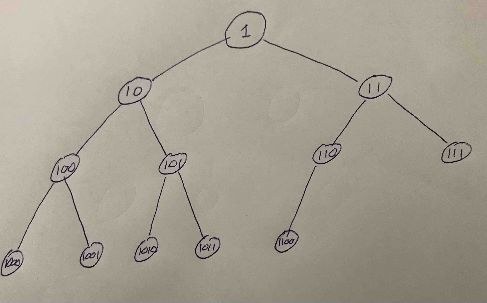

rand(rng, ::Type{Float64}) = reinterpret(Float64, 0x3ff0000000000000 | rand(rng, Random.UInt52())) - 1.0Unit 7: Monte Carlo and discrete event simulation
1 Unit 7: Monte Carlo and discrete event simulation
In this unit we move away from computer algebra to a completely different world: randomness and simulation. The first component that we cover, uniform pseudorandom numbers, is in fact mildly related to computer algebra because algorithms for generating uniform pseudorandom numbers are often analyzed with number theory (however we won’t go in that direction). The latter components of the unit are significantly different as they involve probability distributions, statistics, modelling and simulation, as well as structured software design.
Monte Carlo is a city in Monaco on the Mediterranean Sea which is known for gambling. It was used as a codename during the Manhattan Project by Stan Ulam, John von Neuman and Nicholas Metropolis to describe a new type of statistical sampling - the name chosen based on the city where Ulam’s uncle spent considerable time gambling. The method was used to compute the random scattering of neutrons within a nuclear device, first with an analog device called the FERMIAC and shortly later on the ENIAC (the first programmable, electronic computer).
The concept of statistical sampling from a distribution was not new — it was known how to solve a problem involving randomness or uncertainty by running a series of deterministic calculations over e.g. different initial conditions chosen from a distribution at random. The new insight was that there are a wide range of deterministic problems that could be solved via random simulations (such as simulated annealing), which became known as the Monte Carlo method. These days, for either case it is common to say you “use Monte Carlo” whenever you use some form of randomness (or more typically, pseudorandomness) as part of an algorithm or computation.
Discrete event simulation is one form of simulation of mathematical models. It can be viewed as one type of Monte Carlo method, however we note that Monte Carlo is a much broader field (in fact, UQ has multiple researchers known for their contributions to Monte Carlo including Dirk Kroese). The choice to cover discrete event simulation as part of this unit is because of the programming complexity that it entails. As is made evident in this unit, the development of a discrete event simulation engine requires some structured programming and design.
The mathematics and modelling concepts that this unit covers are:
- A light introduction to (uniform) pseudorandom numbers. How they are generated and what to expect from them.
- Generation of random numbers drawn from arbitrary distributions based on uniform pseudorandom numbers.
- Discrete event simulation modelling and the structure of a discrete event simulation engine.
- Time permitting, a light overview of multiple applications of pseudorandom numbers including the bootstrap method in statistics and Markov-chain Monte Carlo (MCMC).
In addition to the mathematical and modelling concepts that you’ll pick up in this unit, you will also further your understanding of programming, data structures, and Julia. Specifically you will cover:
- The heap data structure and its inner workings.
- More practice with parametric types and designing types (
structs). - Working with Julia modules and structuring a larger program.
- How to test, benchmark and optimize your code
In terms of Monte Carlo and discrete event simulation, you will be learning different ways to run simulations and how interpret the accuracy (statistic significance) of the results. You will be building an “engine” for solving not just one mathematical problem, but an entire class of problems specified by input data (configuration).
1.1 Truly random number generators
We won’t dwell on this, but there is an industry for hardware random number generators. These days you can even purchase devices that work by collapsing a quantum superposition, providing guarantees of “true” randomness!
1.2 (Pseudo)-Random Numbers
The main player in this discussion is the rand() function. When used without input arguments, rand() generates a ``random’’ number in the interval \([0, 1)\). Several questions can be asked. How is it random? What does random within the interval \([0, 1)\) really mean? How can it be used as an aid for statistical and scientific computation? For this we discuss pseudorandom numbers in a bit more generality.
The “random” numbers we generate using Julia, as well as most “random” numbers used in any other scientific computing platform, are actually pseudorandom. That is, they aren’t really random but rather appear random. For their generation, there is some deterministic (non-random and well defined) sequence, \(\{x_n\}\), specified by
\[ (x_{n+1}, \mathbf{s}_{n+1}) = f(\mathbf{s}_n), \]
where \(\mathbf{s}_n\) is the hidden state of the random-number generator and f is a deterministic function that creates the next number in the sequence and advances the hidden state. We will see that in the simplest generators, \(\mathbf{s}_n\) is just \(x_n\), so you generate \(x_{n+1}\) directly from the value of \(x_n\). In more complex generators, \(\mathbf{s}_n\) may involve quite a bit of auxillary data. The initial value \(\mathbf{s}_0\) is called the seed and uniquely determines the sequence of values \(x_1, x_2, \ldots\).
The mathematical function, \(f(\cdot)\) is often (but not always) quite a complicated function, designed to yield desirable properties for the sequence \(\{x_n\}\) that make it appear random. Among other properties we wish for the following to hold:
- Elements \(x_i\) and \(x_j\) for \(i \neq j\) should appear statistically independent. That is, knowing the value of \(x_i\) should not yield information about the value of \(x_j\).
- The distribution of \(\{x_n\}\) should appear uniform. That is, there shouldn’t be values (or ranges of values) where elements of \(\{x_n\}\) occur more frequently than others.
- The range covered by \(\{x_n\}\) should be well defined.
- The sequence should repeat itself as rarely as possible.
- For cryptographic applications, it should be difficult (nearly impossible) to determine the hidden state \(\mathbf{s}_n\) given observations of \(x_n, x_{n-1}, \ldots\).
Typically, a mathematical function such as \(f(\cdot)\) is designed to produce integers in the range \(\{0, \ldots, 2^{\ell}-1\}\) where \(\ell\) is typically 16, 32, 64 or 128 (depending on the number of bits used to represent an integer). Hence \(\{x_n\}\) is a sequence of pseudorandom integers. Then if we wish to have a pseudorandom number in the range \([0, 1)\) (represented via a floating point number), we normalize via,
\[ U_n = \frac{x_n}{2^\ell}. \]
In practice it is faster not to divide integers, but instead to randomly generate the mantissa of a floating-point number and set the exponent to zero. E.g. rand() in Julia will construct 52 random bits to fill in the mantissa of a Float64 (giving a number in the range \([1, 2)\)), and then subtract 1.0 to remove the implicit most-significant bit:
When calling rand() in Julia (as well as in many other programming languages), what we are doing is effectively requesting the system to present us with \(U_n\). Then, in the next call, \(U_{n+1}\), and in the call after this \(U_{n+2}\), etc. As a user, we don’t care about the actual value of \(n\) or the hidden state \(\mathbf{s}_n\) — we simply trust the computing system that the next pseudorandom number will differ and adhere to the properties (i)–(iv) mentioned above. In Julia the hidden state is stored inside the mutable rng object and there is a default rng object provided for each Task (i.e. thread of execution) so you don’t need to manage it manually.
One may ask, where does the sequence start? As mentioned — we have a special name for \(\mathbf{s}_0\) called the seed of the pseudorandom sequence. Typically, as a scientific computing system starts up, it sets \(\mathbf{s}_0\) based on the current time. This implies that on different system startups, \(x_1, x_2, x_3, \ldots\) will be different sequences of pseudorandom numbers. However, we may also set the seed ourselves. There are several uses for this and it is often useful for reproducibility of results (as you have already seen throughout this course).
1.2.1 Inside a simple pseudorandom number generator
First lets not confuse the term “random” with “arbitrary” or “non-deterministic”. Here is for example a “non-deterministic number”:
a = Array{Int}(undef, 10^4)
non_deterministic_number = sum(a)
@show non_deterministic_number;non_deterministic_number = 3884457854223521This number is arbitrary but we have no guarantee that it comes from some distribution, or that if we create it twice then each instance is statistically independent of the other.
Back to (pseudo)-random numbers, number theory and related fields play a central role in the mathematical study of pseudorandom number generation, the internals of which are determined by the specifics of \(f(\cdot)\) of the recursion above. Typically this is not of direct interest to statisticians or users. For exploratory purposes we illustrate how one can make a simple pseudorandom number generator.
A simple to implement class of (now classic and outdated) pseudorandom number generators is the class of Linear Congruential Generators (LCG). These types of LCGs are common in older systems. Here the function \(f(\cdot)\) is nothing but an affine (linear) transformation modulo \(m\),
\[ x_{n+1} = (a \,x_n + c ) ~\mbox{mod}~ m. \]
The integer parameters \(a\), \(c\) and \(m\) are fixed and specify the details of the LCG. Some number theory research has determined “good” values of \(a\) and \(c\) for specific values of \(m\). For example, for \(m=2^{32}\), setting \(a=69069\) and \(c=1\) yields sensible performance. The choice needs to be made carefully as many options yield poor performance. For one famously bad example, see the IBM RANDU generator.
Here we generate values based on the following LCG:
using Plots, LaTeXStrings, Measures
a = 69069
c = 1
m = 2^32
next(z) = (a*z + c) % m
N = 1_000_000
data = Vector{Float64}(undef, N)
x = 808
for i in 1:N
data[i] = x/m
global x = next(x)
end
p1 = scatter(1:1000, data[1:1000];
c = :blue, m = 4, msw = 0, xlabel = L"n", ylabel = L"x_n")
p2 = histogram(data; bins = 50, normed = :true,
ylims = (0, 1.1), xlabel = "Support", ylabel = "Density")
plot(p1, p2; size = (800, 400), legend = :none, margin = 5mm)ArgumentError: Package Plots [91a5bcdd-55d7-5caf-9e0b-520d859cae80] is required but does not seem to be installed: - Run `Pkg.instantiate()` to install all recorded dependencies. Stacktrace: [1] __require_prelocked(pkg::Base.PkgId, env::String) @ Base ./loading.jl:2617 [2] _require_prelocked(uuidkey::Base.PkgId, env::String) @ Base ./loading.jl:2495 [3] macro expansion @ ./loading.jl:2423 [inlined] [4] macro expansion @ ./lock.jl:376 [inlined] [5] __require(into::Module, mod::Symbol) @ Base ./loading.jl:2388 [6] require(into::Module, mod::Symbol) @ Base ./loading.jl:2364 [7] eval(m::Module, e::Any) @ Core ./boot.jl:489 [8] (::QuartoNotebookWorker.var"#21#22"{Module, Expr})() @ QuartoNotebookWorker ~/.julia/packages/QuartoNotebookRunner/evCNi/src/QuartoNotebookWorker/src/render.jl:222 [9] (::QuartoNotebookWorker.Packages.IOCapture.var"#12#13"{Type{InterruptException}, QuartoNotebookWorker.var"#21#22"{Module, Expr}, IOContext{Base.PipeEndpoint}, IOContext{Base.PipeEndpoint}, IOContext{Base.PipeEndpoint}, IOContext{Base.PipeEndpoint}})() @ QuartoNotebookWorker.Packages.IOCapture ~/.julia/packages/QuartoNotebookRunner/evCNi/src/QuartoNotebookWorker/src/vendor/IOCapture/src/IOCapture.jl:170 [10] with_logstate(f::QuartoNotebookWorker.Packages.IOCapture.var"#12#13"{Type{InterruptException}, QuartoNotebookWorker.var"#21#22"{Module, Expr}, IOContext{Base.PipeEndpoint}, IOContext{Base.PipeEndpoint}, IOContext{Base.PipeEndpoint}, IOContext{Base.PipeEndpoint}}, logstate::Base.CoreLogging.LogState) @ Base.CoreLogging ./logging/logging.jl:542 [11] with_logger(f::Function, logger::Base.CoreLogging.ConsoleLogger) @ Base.CoreLogging ./logging/logging.jl:653 [12] capture(f::QuartoNotebookWorker.var"#21#22"{Module, Expr}; rethrow::Type, color::Bool, passthrough::Bool, capture_buffer::IOBuffer, io_context::Vector{Pair{Symbol, Any}}) @ QuartoNotebookWorker.Packages.IOCapture ~/.julia/packages/QuartoNotebookRunner/evCNi/src/QuartoNotebookWorker/src/vendor/IOCapture/src/IOCapture.jl:167 [13] capture @ ~/.julia/packages/QuartoNotebookRunner/evCNi/src/QuartoNotebookWorker/src/render.jl:248 [inlined] [14] io_capture(f::Function; cell_options::Dict{String, Any}, kws::@Kwargs{rethrow::DataType, color::Bool, io_context::Vector{Pair{Symbol, Any}}}) @ QuartoNotebookWorker ~/.julia/packages/QuartoNotebookRunner/evCNi/src/QuartoNotebookWorker/src/render.jl:250 [15] io_capture @ ~/.julia/packages/QuartoNotebookRunner/evCNi/src/QuartoNotebookWorker/src/render.jl:246 [inlined] [16] include_str(mod::Module, code::String; file::String, line::Int64, cell_options::Dict{String, Any}) @ QuartoNotebookWorker ~/.julia/packages/QuartoNotebookRunner/evCNi/src/QuartoNotebookWorker/src/render.jl:201 [17] #invokelatest_gr#232 @ ./reflection.jl:1297 [inlined] [18] invokelatest_gr @ ./reflection.jl:1289 [inlined] [19] #7 @ ~/.julia/packages/QuartoNotebookRunner/evCNi/src/QuartoNotebookWorker/src/render.jl:18 [inlined] [20] with_inline_display(f::QuartoNotebookWorker.var"#7#8"{String, String, Int64, Dict{String, Any}}, cell_options::Dict{String, Any}) @ QuartoNotebookWorker ~/.julia/packages/QuartoNotebookRunner/evCNi/src/QuartoNotebookWorker/src/InlineDisplay.jl:31 [21] _render_thunk(thunk::Function, code::String, cell_options::Dict{String, Any}, is_expansion_ref::Base.RefValue{Bool}; inline::Bool) @ QuartoNotebookWorker ~/.julia/packages/QuartoNotebookRunner/evCNi/src/QuartoNotebookWorker/src/render.jl:43 [22] _render_thunk @ ~/.julia/packages/QuartoNotebookRunner/evCNi/src/QuartoNotebookWorker/src/render.jl:35 [inlined] [23] #render#4 @ ~/.julia/packages/QuartoNotebookRunner/evCNi/src/QuartoNotebookWorker/src/render.jl:15 [inlined] [24] render(code::String, file::String, line::Int64, cell_options::Dict{String, Any}) @ QuartoNotebookWorker ~/.julia/packages/QuartoNotebookRunner/evCNi/src/QuartoNotebookWorker/src/render.jl:1 [25] render(::String, ::Vararg{Any}; kwargs::@Kwargs{}) @ Main ~/.julia/packages/QuartoNotebookRunner/evCNi/src/startup.jl:145 [26] top-level scope @ none:1
The period of the RNG (random number generator) is the number of steps taken until an entry repeats itself. The quantities \(a\), \(c\), and \(m\) above are chosen so that there is a full cycle for the LCG.
1.2.2 Creating and using an RNG object
When you typically use methods of rand, the default global generator sequence is used. Thus for example when you reset the seed via Random.seed!, it affects the global generator. However, sometimes you want to use multiple random sequences. This can be done by passing a random number generator object as the first argument to rand. Such an object is of the abstract type AbstractRNG and will typically be a Xoshiro object.
The Xoshiro256++ RNG is a relatively new RNG algorithm. We won’t get into the details of how it is implemented, but here is how you create such an object in Julia.
using Random
rng = Xoshiro(27)
@show rand(rng, Int)
@show rand(rng, Complex{Float64})
println("\nAfter creating an RNG with same seed:")
rng = Xoshiro(27)
@show rand(rng, Int)
@show rand(rng, Complex{Float64});rand(rng, Int) = 2560383434602997946
rand(rng, Complex{Float64}) = 0.7644694589893917 + 0.1652300088963118im
After creating an RNG with same seed:
rand(rng, Int) = 2560383434602997946
rand(rng, Complex{Float64}) = 0.7644694589893917 + 0.1652300088963118imThere are several reasons for using multiple random number generators, but before these are understood it is good to understand the concept of common random numbers. The general idea is that you want to do some task, or compute some function which depends both on a random sequence and some parameter, say \(\alpha\). Sometimes you would want to vary \(\alpha\) a bit and see the effect on the task and the function. If you keep the same random numbers (the same seed) then the effect will often be more apparent.
Here is an artificial example — consider a random walk (a.k.a. “drunken walk”) with a bias toward the upper-left given by α:
using Plots, Random, Measures
function path(rng::AbstractRNG, α::Real, n::Int=5000)
x = 0.0
y = 0.0
xDat = Float64[]
yDat = Float64[]
for _ in 1:n
# random walk
flip = rand(rng, 1:4)
if flip == 1 # left
x += 1
elseif flip == 2 # up
y += 1
elseif flip == 3 # right
x -= 1
elseif flip == 4 # down
y -= 1
end
# bias toward upper-right
x += α
y += α
# add the result to the output
push!(xDat, x)
push!(yDat, y)
end
return (xDat, yDat)
end
alpha_range = [0.0, 0.002, 0.004]
args = (xlabel = "x", ylabel = "y", xlims=(-150, 150), ylims=(-150, 150))
#Plot runs with same random numbers (common random numbers)\
p1 = plot(path(Xoshiro(27), alpha_range[1]), c = :blue, label = "α=$(alpha_range[1])")
p1 = plot!(path(Xoshiro(27), alpha_range[2]), c = :red, label = "α=$(alpha_range[2])")
p1 = plot!(path(Xoshiro(27), alpha_range[3]), c = :green, label = "α=$(alpha_range[3])", title = "Same seed", legend = :topright; args...)
#Plot runs with different random numbers
rng = Xoshiro(27)
p2 = plot(path(rng, alpha_range[1]), c = :blue, label = "α=$(alpha_range[1])")
p2 = plot!(path(rng, alpha_range[2]), c = :red, label = "α=$(alpha_range[2])")
p2 = plot!(path(rng, alpha_range[3]), c = :green, label = "α=$(alpha_range[3])", title = "Different seeds", legend = :topright; args...)
plot(p1, p2, size=(800, 400), margin=5mm)ArgumentError: Package Plots [91a5bcdd-55d7-5caf-9e0b-520d859cae80] is required but does not seem to be installed: - Run `Pkg.instantiate()` to install all recorded dependencies. Stacktrace: [1] __require_prelocked(pkg::Base.PkgId, env::String) @ Base ./loading.jl:2617 [2] _require_prelocked(uuidkey::Base.PkgId, env::String) @ Base ./loading.jl:2495 [3] macro expansion @ ./loading.jl:2423 [inlined] [4] macro expansion @ ./lock.jl:376 [inlined] [5] __require(into::Module, mod::Symbol) @ Base ./loading.jl:2388 [6] require(into::Module, mod::Symbol) @ Base ./loading.jl:2364 [7] eval(m::Module, e::Any) @ Core ./boot.jl:489 [8] (::QuartoNotebookWorker.var"#21#22"{Module, Expr})() @ QuartoNotebookWorker ~/.julia/packages/QuartoNotebookRunner/evCNi/src/QuartoNotebookWorker/src/render.jl:222 [9] (::QuartoNotebookWorker.Packages.IOCapture.var"#12#13"{Type{InterruptException}, QuartoNotebookWorker.var"#21#22"{Module, Expr}, IOContext{Base.PipeEndpoint}, IOContext{Base.PipeEndpoint}, IOContext{Base.PipeEndpoint}, IOContext{Base.PipeEndpoint}})() @ QuartoNotebookWorker.Packages.IOCapture ~/.julia/packages/QuartoNotebookRunner/evCNi/src/QuartoNotebookWorker/src/vendor/IOCapture/src/IOCapture.jl:170 [10] with_logstate(f::QuartoNotebookWorker.Packages.IOCapture.var"#12#13"{Type{InterruptException}, QuartoNotebookWorker.var"#21#22"{Module, Expr}, IOContext{Base.PipeEndpoint}, IOContext{Base.PipeEndpoint}, IOContext{Base.PipeEndpoint}, IOContext{Base.PipeEndpoint}}, logstate::Base.CoreLogging.LogState) @ Base.CoreLogging ./logging/logging.jl:542 [11] with_logger(f::Function, logger::Base.CoreLogging.ConsoleLogger) @ Base.CoreLogging ./logging/logging.jl:653 [12] capture(f::QuartoNotebookWorker.var"#21#22"{Module, Expr}; rethrow::Type, color::Bool, passthrough::Bool, capture_buffer::IOBuffer, io_context::Vector{Pair{Symbol, Any}}) @ QuartoNotebookWorker.Packages.IOCapture ~/.julia/packages/QuartoNotebookRunner/evCNi/src/QuartoNotebookWorker/src/vendor/IOCapture/src/IOCapture.jl:167 [13] capture @ ~/.julia/packages/QuartoNotebookRunner/evCNi/src/QuartoNotebookWorker/src/render.jl:248 [inlined] [14] io_capture(f::Function; cell_options::Dict{String, Any}, kws::@Kwargs{rethrow::DataType, color::Bool, io_context::Vector{Pair{Symbol, Any}}}) @ QuartoNotebookWorker ~/.julia/packages/QuartoNotebookRunner/evCNi/src/QuartoNotebookWorker/src/render.jl:250 [15] io_capture @ ~/.julia/packages/QuartoNotebookRunner/evCNi/src/QuartoNotebookWorker/src/render.jl:246 [inlined] [16] include_str(mod::Module, code::String; file::String, line::Int64, cell_options::Dict{String, Any}) @ QuartoNotebookWorker ~/.julia/packages/QuartoNotebookRunner/evCNi/src/QuartoNotebookWorker/src/render.jl:201 [17] #invokelatest_gr#232 @ ./reflection.jl:1297 [inlined] [18] invokelatest_gr @ ./reflection.jl:1289 [inlined] [19] #7 @ ~/.julia/packages/QuartoNotebookRunner/evCNi/src/QuartoNotebookWorker/src/render.jl:18 [inlined] [20] with_inline_display(f::QuartoNotebookWorker.var"#7#8"{String, String, Int64, Dict{String, Any}}, cell_options::Dict{String, Any}) @ QuartoNotebookWorker ~/.julia/packages/QuartoNotebookRunner/evCNi/src/QuartoNotebookWorker/src/InlineDisplay.jl:31 [21] _render_thunk(thunk::Function, code::String, cell_options::Dict{String, Any}, is_expansion_ref::Base.RefValue{Bool}; inline::Bool) @ QuartoNotebookWorker ~/.julia/packages/QuartoNotebookRunner/evCNi/src/QuartoNotebookWorker/src/render.jl:43 [22] _render_thunk @ ~/.julia/packages/QuartoNotebookRunner/evCNi/src/QuartoNotebookWorker/src/render.jl:35 [inlined] [23] #render#4 @ ~/.julia/packages/QuartoNotebookRunner/evCNi/src/QuartoNotebookWorker/src/render.jl:15 [inlined] [24] render(code::String, file::String, line::Int64, cell_options::Dict{String, Any}) @ QuartoNotebookWorker ~/.julia/packages/QuartoNotebookRunner/evCNi/src/QuartoNotebookWorker/src/render.jl:1 [25] render(::String, ::Vararg{Any}; kwargs::@Kwargs{}) @ Main ~/.julia/packages/QuartoNotebookRunner/evCNi/src/startup.jl:145 [26] top-level scope @ none:1
As can be seen on the left, by keeping the same seed and varying \(\alpha\) we see the effect on the walk much clearer than by having each run have its own seed.
In general, common random numbers can be viewed as a form of a variance reduction technique in Monte Carlo.
1.3 From Uniform(0,1) to a given distribution
We now come to the question of how to generate random variables from a given distribution based on uniform(0,1) random variables. That is, say that all you have is the ability to do rand() function calls, each generating a uniform random Float64 on in the set \([0,1)\). How can you use it for generating random quantities from other distributions?
1.3.0.1 Basic distributions
Sometimes it isn’t difficult. For example, we could scale the variables to get a uniform distribution between a and b:
# function to generate a uniform(a, b) random variable
rand_uniform(a::Real, b::Real) = (b-a)*rand() + a;Another thing we can do is sample discrete distributions such as a Bernoulli distribution (e.g. a coin toss):
# function to generate a binomial random variable
rand_bit(p::Real = 0.5) = rand() <= p ? 1 : 0rand_bit (generic function with 2 methods)We can generalize this beyond a binary decision (e.g. a weighted dice roll). If we have n choices with probabilities p[n] >= 0 where sum(p) == 1, we can construct the cumulative distribution function (CDF) using cumsum:
p = [0.1, 0.3, 0.2, 0.4]
p_cdf = cumsum(p)4-element Vector{Float64}:
0.1
0.4
0.6
1.0So we can draw from such a distribution like so:
function rand_from_cdf(cdf::Vector{Float64})
r = rand()
i = 1
while r > cdf[i]
i = i + 1
end
return i
end
histogram([rand_from_cdf(p_cdf) for _ in 1:10^6], bins=4, normed=true)UndefVarError: `histogram` not defined in `Main.Notebook` Suggestion: check for spelling errors or missing imports. Stacktrace: [1] top-level scope @ ~/github/ProgrammingCourse-with-Julia-SimulationAnalysisAndLearningSystems/quarto/lecture-unit-7.qmd:248
What the above is doing is effectively inverting the CDF. The CDF was a function from \(\{1, 2, \ldots, n\}\) to \([0, 1]\) and the inverse of the CDF function is a mapping from \([0, 1]\) (the randomly generated number r above) to \(\{1, 2, \ldots, n\}\) to \([0, 1]\). Knowing the CDF and its inverse is quite powerful, even for continuous distributions. We’ll return to using it again below.
1.3.0.2 Binomial distribution
Sometimes you can use specialized methods for the distribution at hand. For example a Binomial\((n,p)\) random variables counts the number of successes in \(n\) independent Bernoulli trials, each with success probability \(p\).
rand_binomial(n::Integer, p::Real = 0.5) = sum(rand_bit(p) for _ in 1:n)rand_binomial (generic function with 2 methods)The Binomial\((n,p)\) distribution has mean \(np\) and standard deviation \(\sqrt{np(1-p)}\). So for example with \(n=20\) and \(p=0.3\):
n = 20
p = 0.3
(mean = n*p, std = sqrt(n*p*(1-p)))(mean = 6.0, std = 2.0493901531919194)Lets see what statistics we get from 1 million Monte Carlo samples:
using Statistics
n = 20
p = 0.3
data = [rand_binomial(n,p) for _ in 1:10^6]
(mean = mean(data), std = std(data))(mean = 6.000043, std = 2.0469287208078812)Another way of doing this is to sample the CDF of the binomial distribution above. We could have also used the Distributions.jl package, which provides statistics and samplers for many common distributions:
using Distributions
dist = Binomial(n, p)
data = rand(dist, 10^6)
(mean = mean(data), std = std(data))ArgumentError: Package Distributions [31c24e10-a181-5473-b8eb-7969acd0382f] is required but does not seem to be installed: - Run `Pkg.instantiate()` to install all recorded dependencies. Stacktrace: [1] __require_prelocked(pkg::Base.PkgId, env::String) @ Base ./loading.jl:2617 [2] _require_prelocked(uuidkey::Base.PkgId, env::String) @ Base ./loading.jl:2495 [3] macro expansion @ ./loading.jl:2423 [inlined] [4] macro expansion @ ./lock.jl:376 [inlined] [5] __require(into::Module, mod::Symbol) @ Base ./loading.jl:2388 [6] require(into::Module, mod::Symbol) @ Base ./loading.jl:2364 [7] eval(m::Module, e::Any) @ Core ./boot.jl:489 [8] (::QuartoNotebookWorker.var"#21#22"{Module, Expr})() @ QuartoNotebookWorker ~/.julia/packages/QuartoNotebookRunner/evCNi/src/QuartoNotebookWorker/src/render.jl:222 [9] (::QuartoNotebookWorker.Packages.IOCapture.var"#12#13"{Type{InterruptException}, QuartoNotebookWorker.var"#21#22"{Module, Expr}, IOContext{Base.PipeEndpoint}, IOContext{Base.PipeEndpoint}, IOContext{Base.PipeEndpoint}, IOContext{Base.PipeEndpoint}})() @ QuartoNotebookWorker.Packages.IOCapture ~/.julia/packages/QuartoNotebookRunner/evCNi/src/QuartoNotebookWorker/src/vendor/IOCapture/src/IOCapture.jl:170 [10] with_logstate(f::QuartoNotebookWorker.Packages.IOCapture.var"#12#13"{Type{InterruptException}, QuartoNotebookWorker.var"#21#22"{Module, Expr}, IOContext{Base.PipeEndpoint}, IOContext{Base.PipeEndpoint}, IOContext{Base.PipeEndpoint}, IOContext{Base.PipeEndpoint}}, logstate::Base.CoreLogging.LogState) @ Base.CoreLogging ./logging/logging.jl:542 [11] with_logger(f::Function, logger::Base.CoreLogging.ConsoleLogger) @ Base.CoreLogging ./logging/logging.jl:653 [12] capture(f::QuartoNotebookWorker.var"#21#22"{Module, Expr}; rethrow::Type, color::Bool, passthrough::Bool, capture_buffer::IOBuffer, io_context::Vector{Pair{Symbol, Any}}) @ QuartoNotebookWorker.Packages.IOCapture ~/.julia/packages/QuartoNotebookRunner/evCNi/src/QuartoNotebookWorker/src/vendor/IOCapture/src/IOCapture.jl:167 [13] capture @ ~/.julia/packages/QuartoNotebookRunner/evCNi/src/QuartoNotebookWorker/src/render.jl:248 [inlined] [14] io_capture(f::Function; cell_options::Dict{String, Any}, kws::@Kwargs{rethrow::DataType, color::Bool, io_context::Vector{Pair{Symbol, Any}}}) @ QuartoNotebookWorker ~/.julia/packages/QuartoNotebookRunner/evCNi/src/QuartoNotebookWorker/src/render.jl:250 [15] io_capture @ ~/.julia/packages/QuartoNotebookRunner/evCNi/src/QuartoNotebookWorker/src/render.jl:246 [inlined] [16] include_str(mod::Module, code::String; file::String, line::Int64, cell_options::Dict{String, Any}) @ QuartoNotebookWorker ~/.julia/packages/QuartoNotebookRunner/evCNi/src/QuartoNotebookWorker/src/render.jl:201 [17] #invokelatest_gr#232 @ ./reflection.jl:1297 [inlined] [18] invokelatest_gr @ ./reflection.jl:1289 [inlined] [19] #7 @ ~/.julia/packages/QuartoNotebookRunner/evCNi/src/QuartoNotebookWorker/src/render.jl:18 [inlined] [20] with_inline_display(f::QuartoNotebookWorker.var"#7#8"{String, String, Int64, Dict{String, Any}}, cell_options::Dict{String, Any}) @ QuartoNotebookWorker ~/.julia/packages/QuartoNotebookRunner/evCNi/src/QuartoNotebookWorker/src/InlineDisplay.jl:31 [21] _render_thunk(thunk::Function, code::String, cell_options::Dict{String, Any}, is_expansion_ref::Base.RefValue{Bool}; inline::Bool) @ QuartoNotebookWorker ~/.julia/packages/QuartoNotebookRunner/evCNi/src/QuartoNotebookWorker/src/render.jl:43 [22] _render_thunk @ ~/.julia/packages/QuartoNotebookRunner/evCNi/src/QuartoNotebookWorker/src/render.jl:35 [inlined] [23] #render#4 @ ~/.julia/packages/QuartoNotebookRunner/evCNi/src/QuartoNotebookWorker/src/render.jl:15 [inlined] [24] render(code::String, file::String, line::Int64, cell_options::Dict{String, Any}) @ QuartoNotebookWorker ~/.julia/packages/QuartoNotebookRunner/evCNi/src/QuartoNotebookWorker/src/render.jl:1 [25] render(::String, ::Vararg{Any}; kwargs::@Kwargs{}) @ Main ~/.julia/packages/QuartoNotebookRunner/evCNi/src/startup.jl:145 [26] top-level scope @ none:1
In fact, in with the Distributions package you can query the distribution object directly about things like the mean and standard deviation:
(mean = mean(dist), std = std(dist))UndefVarError: `dist` not defined in `Main.Notebook` Suggestion: check for spelling errors or missing imports. Stacktrace: [1] top-level scope @ ~/github/ProgrammingCourse-with-Julia-SimulationAnalysisAndLearningSystems/quarto/lecture-unit-7.qmd:292
The study of Monte Carlo methods includes a collection of algorithms for generating random variables from desired distributions. For example for the geometric distribution (describing the number of independent Bernoulli trials until success), and similarly for the negative binomial distribution (until \(k\) successes), we can just write code based the Bernoulli coin flips (for example: geometric.jl or negativeBinomial.jl).
1.3.0.3 Exponential distribution
In other cases, there are seemingly “magical” algorithms for generating random variables from a given distribution. For example take the exponential distribution with PDF (probability density function) \(p(x) = \lambda \exp(-\lambda x)\) where \(\lambda\) is called the rate parameter (and is the inverse of the “halflife”). Here are some plots of PDFs for various \(\lambda\):
x = 0:0.01:5
plot(x, 0.5 .* exp.(-0.5 .* x); label = "λ = 0.5")
plot!(x, 1.0 .* exp.(-1.0 .* x); label = "λ = 1.0")
plot!(x, 1.5 .* exp.(-1.5 .* x); label = "λ = 1.5", xlabel = "x", ylabel = "PDF")UndefVarError: `plot` not defined in `Main.Notebook` Suggestion: check for spelling errors or missing imports. Stacktrace: [1] top-level scope @ ~/github/ProgrammingCourse-with-Julia-SimulationAnalysisAndLearningSystems/quarto/lecture-unit-7.qmd:303
It turns out you can create a sample for this using this algorithm:
randexp(λ) = -log(rand()) / λ(Note that Julia has a randexp function provided in the Random standard library.)
At first this algorithm might seem surprising, however it isn’t too hard to derive. For starters, the scaling with \(\lambda\) is relatively easy to understand - you can rescale x in one of the PDFs above to get any of the others.
How then to explain the log(rand()) part? In principle you can generate a scalar random variable from any given distribution using the inverse probability transform. The idea is that you generate a uniform\((0,1)\) random variable and apply the inverse of the CDF (cumulative distribution function) of your desired distribution to that uniform.
A reminder: For a random variable \(X\), the CDF \(CDF(x)\) is the function \(CDF(x) = {\mathbb P}(X \le x)\) which is the integral of the PDF:
\[ CDF(x) = \int_{X \le x} p(X) \, dX \]
It is a non-decreasing function in \(x\) (because \(p\) is never negative) with limits at \(0\) for \(x \to -\infty\) and \(1\) for \(x \to \infty\). This is enough to ensure that the inverse function \(CDF^{-1}(p)\) exists. To remind you what an inverse function is, it is the function such that \(CDF^{-1}\big(CDF(x)\big) = x\).
The idea of the inverse probability transform is then to apply the inverse CDF function onto a uniform random variable to get the desired distribution. So, let us look at the cumulative distribution of the exponential distribution:
\[ CDF(x) = 1 - \exp(\lambda x) \]
x = 0:0.01:3
plot(x, 1.0 .- exp.(-0.5 .* x); label = "λ = 0.5")
plot!(x, 1.0 .- exp.(-1.0 .* x); label = "λ = 1.0")
plot!(x, 1.0 .- exp.(-1.5 .* x); label = "λ = 1.5", xlabel = "x", ylabel = "CDF")
plot!(0:0.01:2, 0:0.01:2; linestyle = :dot, linecolor = :black, label = "")UndefVarError: `plot` not defined in `Main.Notebook` Suggestion: check for spelling errors or missing imports. Stacktrace: [1] top-level scope @ ~/github/ProgrammingCourse-with-Julia-SimulationAnalysisAndLearningSystems/quarto/lecture-unit-7.qmd:337
We can invert the CDF function (i.e. mirror the above graphs across the diagonal \(x = y\)) via:
\[ CDF^{-1}(p) = \frac{-\ln(1 - p)}{\lambda} \]
If we make the substitution \(r = 1 - p\) and note that both \(r\) and \(p\) share the same domain \([0, 1]\) we get the \(-\ln(r) / \lambda\) that we see in randexp above. The algorithm will draw a cumulative probability from a uniform distribution and use the inverse CDF to project to a value of \(x\).
1.3.0.4 Gaussian distribution
To generate a standard normal (Gaussian) random variable you can use the Box-Muller transform:
randn() = sqrt(-2log(rand())) * cos(2π*rand())(Note that Julia provides an efficient version of this randn function by default.)
This is another seemingly magical algorithm but it isn’t too hard to understand. Like before we want to find the CDF of the distribution and invert it. The CDF is just the integral of the PDF. And if you cast your mind back to your calculus classes, the way to integrate a Gaussian is to transform it into the 2D integral of a 2D Gaussian and use polar coordinates:
\[ \left( \int_{-\infty}^{\infty} \exp(\frac{-x^2}{2}) \,dx \right)^2 = \int_{-\infty}^{\infty} \int_{-\infty}^{\infty} \exp(\frac{-(x^2 + y^2)}{2}) \,dx \,dy = \int_{0}^{2\pi} \int_{0}^{\infty} r \exp(\frac{-r^2}{2}) \,dr \,d\theta = 2\pi \int_0^{\infty} \exp(-R) \,dR = 2\pi \]
(where we do integration by substitution with \(R = \frac{1}{2} r^2\), such that \(dR = r \, dr\)).
We are going to use the same trick here — we can draw a value of \(x\) from a Gaussian distribution and another value of \(y\) from a Gaussian distribution using polar coordinates. We are drawing \((x, y)\) from the 2D PDF below:
x = -3:0.025:3
y = -3:0.025:3
p = exp.(-0.5 .* (x.^2 .+ y'.^2)) ./ 2π
contourf(x, y, p; xlabel = "x", ylabel = "y", aspect_ratio = :equal)UndefVarError: `contourf` not defined in `Main.Notebook` Suggestion: check for spelling errors or missing imports. Stacktrace: [1] top-level scope @ ~/github/ProgrammingCourse-with-Julia-SimulationAnalysisAndLearningSystems/quarto/lecture-unit-7.qmd:376
Rather than drawing a random \(x\) and \(y\) we will draw a random \(r\) and \(\theta\). Afterwards we can reproduce \(x = r \cos \theta\) and \(y = r \sin \theta\).
Given the distribution has rotational symmetry we can draw \(\theta\) from the uniform distribution \([0, 2\pi)\), so x = r * cos(2π * rand()).
Now we just need to find a way to sample r. Rather than drawing \(r\) from \(r \exp(-r^2 / 2)\) we can draw R from \(\exp(-R)\), using the exponential algorithm above R = -log(rand()). We can then reproduce r = sqrt(2R) which is sqrt(-2*log(rand()).
Putting all of this together reproduces the algorithm above and we can faithfully sample the Gaussian distribution:
using Random, Distributions, Plots
Random.seed!(1)
my_randn() = sqrt(-2log(rand())) * cos(2π*rand())
x_grid = -4:0.01:4
histogram([my_randn() for _ in 1:10^6], bins=50, normed=true, label="MC estimate")
plot!(x_grid, pdf.(Normal(),x_grid),
c = :red, lw = 4, label = "PDF",
xlims = (-4,4), ylims = (0,0.5), xlabel = "x", ylabel = "f(x)")ArgumentError: Package Distributions [31c24e10-a181-5473-b8eb-7969acd0382f] is required but does not seem to be installed: - Run `Pkg.instantiate()` to install all recorded dependencies. Stacktrace: [1] __require_prelocked(pkg::Base.PkgId, env::String) @ Base ./loading.jl:2617 [2] _require_prelocked(uuidkey::Base.PkgId, env::String) @ Base ./loading.jl:2495 [3] macro expansion @ ./loading.jl:2423 [inlined] [4] macro expansion @ ./lock.jl:376 [inlined] [5] __require(into::Module, mod::Symbol) @ Base ./loading.jl:2388 [6] require(into::Module, mod::Symbol) @ Base ./loading.jl:2364 [7] eval(m::Module, e::Any) @ Core ./boot.jl:489 [8] (::QuartoNotebookWorker.var"#21#22"{Module, Expr})() @ QuartoNotebookWorker ~/.julia/packages/QuartoNotebookRunner/evCNi/src/QuartoNotebookWorker/src/render.jl:222 [9] (::QuartoNotebookWorker.Packages.IOCapture.var"#12#13"{Type{InterruptException}, QuartoNotebookWorker.var"#21#22"{Module, Expr}, IOContext{Base.PipeEndpoint}, IOContext{Base.PipeEndpoint}, IOContext{Base.PipeEndpoint}, IOContext{Base.PipeEndpoint}})() @ QuartoNotebookWorker.Packages.IOCapture ~/.julia/packages/QuartoNotebookRunner/evCNi/src/QuartoNotebookWorker/src/vendor/IOCapture/src/IOCapture.jl:170 [10] with_logstate(f::QuartoNotebookWorker.Packages.IOCapture.var"#12#13"{Type{InterruptException}, QuartoNotebookWorker.var"#21#22"{Module, Expr}, IOContext{Base.PipeEndpoint}, IOContext{Base.PipeEndpoint}, IOContext{Base.PipeEndpoint}, IOContext{Base.PipeEndpoint}}, logstate::Base.CoreLogging.LogState) @ Base.CoreLogging ./logging/logging.jl:542 [11] with_logger(f::Function, logger::Base.CoreLogging.ConsoleLogger) @ Base.CoreLogging ./logging/logging.jl:653 [12] capture(f::QuartoNotebookWorker.var"#21#22"{Module, Expr}; rethrow::Type, color::Bool, passthrough::Bool, capture_buffer::IOBuffer, io_context::Vector{Pair{Symbol, Any}}) @ QuartoNotebookWorker.Packages.IOCapture ~/.julia/packages/QuartoNotebookRunner/evCNi/src/QuartoNotebookWorker/src/vendor/IOCapture/src/IOCapture.jl:167 [13] capture @ ~/.julia/packages/QuartoNotebookRunner/evCNi/src/QuartoNotebookWorker/src/render.jl:248 [inlined] [14] io_capture(f::Function; cell_options::Dict{String, Any}, kws::@Kwargs{rethrow::DataType, color::Bool, io_context::Vector{Pair{Symbol, Any}}}) @ QuartoNotebookWorker ~/.julia/packages/QuartoNotebookRunner/evCNi/src/QuartoNotebookWorker/src/render.jl:250 [15] io_capture @ ~/.julia/packages/QuartoNotebookRunner/evCNi/src/QuartoNotebookWorker/src/render.jl:246 [inlined] [16] include_str(mod::Module, code::String; file::String, line::Int64, cell_options::Dict{String, Any}) @ QuartoNotebookWorker ~/.julia/packages/QuartoNotebookRunner/evCNi/src/QuartoNotebookWorker/src/render.jl:201 [17] #invokelatest_gr#232 @ ./reflection.jl:1297 [inlined] [18] invokelatest_gr @ ./reflection.jl:1289 [inlined] [19] #7 @ ~/.julia/packages/QuartoNotebookRunner/evCNi/src/QuartoNotebookWorker/src/render.jl:18 [inlined] [20] with_inline_display(f::QuartoNotebookWorker.var"#7#8"{String, String, Int64, Dict{String, Any}}, cell_options::Dict{String, Any}) @ QuartoNotebookWorker ~/.julia/packages/QuartoNotebookRunner/evCNi/src/QuartoNotebookWorker/src/InlineDisplay.jl:31 [21] _render_thunk(thunk::Function, code::String, cell_options::Dict{String, Any}, is_expansion_ref::Base.RefValue{Bool}; inline::Bool) @ QuartoNotebookWorker ~/.julia/packages/QuartoNotebookRunner/evCNi/src/QuartoNotebookWorker/src/render.jl:43 [22] _render_thunk @ ~/.julia/packages/QuartoNotebookRunner/evCNi/src/QuartoNotebookWorker/src/render.jl:35 [inlined] [23] #render#4 @ ~/.julia/packages/QuartoNotebookRunner/evCNi/src/QuartoNotebookWorker/src/render.jl:15 [inlined] [24] render(code::String, file::String, line::Int64, cell_options::Dict{String, Any}) @ QuartoNotebookWorker ~/.julia/packages/QuartoNotebookRunner/evCNi/src/QuartoNotebookWorker/src/render.jl:1 [25] render(::String, ::Vararg{Any}; kwargs::@Kwargs{}) @ Main ~/.julia/packages/QuartoNotebookRunner/evCNi/src/startup.jl:145 [26] top-level scope @ none:1
1.3.0.5 Rejection sampling
There are many other methods for generating random variables, some of which general and some are specialized. An important general method that we don’t discuss much here is rejection sampling. For example, to find a pair of random variables in a circle, one could simply throw away anything that falls outside a larger square and draw a new sample:
x = [2*rand() - 1 for _ in 1:5000]
y = [2*rand() - 1 for _ in 1:5000]
c = [x[i]^2 + y[i]^2 <= 1 ? :blue : :red for i in 1:length(x)]
scatter(x, y; c, xlabel = "x", ylabel = "y", label = "", aspect_ratio = :equal)UndefVarError: `scatter` not defined in `Main.Notebook` Suggestion: check for spelling errors or missing imports. Stacktrace: [1] top-level scope @ ~/github/ProgrammingCourse-with-Julia-SimulationAnalysisAndLearningSystems/quarto/lecture-unit-7.qmd:409
So long as the rejection probability is not too large (very close to 1), this can be an efficient technique. In fact, many of Julia’s fast random number generators, including randn() use a clever variant of this technique called the Ziggurat algorithm.
1.3.0.6 Efficient sampling of discrete probability distributions
To finish off this section we’re going to revisit random sampling of discrete distributions and talk about the “alias table” algorithm. If we compare our version of randn() above with Julia’s builtin version, we see that optimized versions of numerical algorithms can often be far faster than a straightforward implementation of a mathematical idea, even if we can invert the CDF. Thus in practice, practical random sampling code often relies more on numerical tricks and algorithmic optimizations than a simple mathematical formula.
The alias tables algorithm is one such case and is used as the underlying sampler for Distributions.Categorical. It’s relatively simple to implement and understand so we’ll show an example implementation here as a flavour of the kind of practical numerical code you’ll see. For an optimized and carefully checked implementation see the Julia package AliasTables.jl.
Starting with a discrete probability density [p[i] for i in 1:n], alias table sampling conceptually generates a i between 1 and n and random number \(z\) in \([0,1/n)\), producing i when z < p[i], and “some other value k” otherwise. The key insight is that we may always precompute an array K such that we can just return k = K[i] for the alternative case. Here’s the sampling code. In practice, we scale U = n*p and use a random number y in \([0,1)\) in the code:
function alias_sample(U,K)
n = length(U)
x = rand()*n
offset = floor(Int, x)
y = x - offset # this is z*n in our description above
i = offset + 1
if y < U[i]
return i
else
return K[i] # The "alias" for i
end
endalias_sample (generic function with 1 method)Generating i when y < U[i] is correct by construction: the probability is 1/n for the choice of i multiplied by U[i] for the choice of y which is \((1/n * (p[i]*n)) = p[i]\).
But what if U[i] > 1? That is, there’s more than \(1/n\) probability in the ith slot? In that case, we need to redirect other slots j into the slot with excess probability. We can do this as follows:
function alias_setup(p)
if sum(p) ≉ 1
throw(ArgumentError("Probability distribution is not normalized"))
end
n = length(p)
U = zeros(n)
K = zeros(Int, n)
# Initialize U. U[i] is "overfull" if U[i] > 1 and "underfull" if < 1.
# A uniform distribution will have U[i] == 1
U .= n .* p
underfull = Int[]
overfull = Int[]
for i = 1:n
if U[i] > 1
push!(overfull, i)
else
push!(underfull, i)
end
end
while !isempty(overfull)
# @info "" overfull U[overfull]
i = pop!(overfull)
j = pop!(underfull)
# Allocate all the "extra" probability (1 - U[j]) to U[i]
K[j] = i
new_Ui = U[i] + U[j] - 1
U[i] = new_Ui
if new_Ui < 1
push!(underfull, i)
elseif new_Ui > 1 && !(new_Ui ≈ 1)
push!(overfull, i)
end
end
return U, K
endalias_setup (generic function with 1 method)p = [0.1, 0.3, 0.1, 0.05, 0.45]
U, K = alias_setup(p);Let’s look quickly at the distribution of samples:
N_samples = 10000
histogram([alias_sample(U, K) for _ in 1:N_samples])
bar!(p*N_samples, xlabel="index", ylabel="Samples")UndefVarError: `histogram` not defined in `Main.Notebook` Suggestion: check for spelling errors or missing imports. Stacktrace: [1] top-level scope @ ~/github/ProgrammingCourse-with-Julia-SimulationAnalysisAndLearningSystems/quarto/lecture-unit-7.qmd:518
2 Discrete event simulation basics
Discrete event simulation is a way of simulating dynamic systems that are subject to changes occurring over discrete points of time. The basic idea is to consider discrete time instances, \(T_1 < T_2 < T_3 < \ldots\), and assume that in between \(T_i\) and \(T_{i+1}\) the system state remains unchanged, or follows a deterministic path.
Here is a very simple example, just designed to illustrate the concept:
- Assume that \(5\) workers at a donation call centre make telephone calls continuously for \(1\) hour.
- The duration of each call is exponentially distributed with a mean of \(7\) minutes.
- Assume that a call which takes less than \(1.5\) minutes ends without a donation and that calls that take more than \(1.5\) minutes end with a donation proportional to the call time (with a factor of $\(2.5\) per minute).
We can simulate the revenue curve of the call center using discrete event simulation. Side note: Under the simplistic assumptions above the revenue is actually a compound Poisson process and many questions about its behavior can be answered without simulation. However, the simulation here is worthwhile to consider from a pedagogical perspective.
The following code creates three realizations (or trajectories) of the revenue as a function of time.
using Distributions, Random, Plots
Random.seed!(0)
call_duration() = rand(Exponential(7.0))
money_made(duration::Float64)::Float64 = duration <= 1.5 ? 0.0 : 2.5 * duration
function simulate()
current_worker_calls = [call_duration() for _ in 1:5] # initialize: all workers start a call at t=0
event_list = copy(current_worker_calls)
revenue = 0.0
t = 0.0
times_log = Float64[]
revenue_log = Float64[]
while true
# find the worker that has just finished their call
i = argmin(event_list) # note - performance bottleneck
# advance time to that call
t = event_list[i]
if t ≥ 60 # trigger simulation end
push!(times_log, 60)
push!(revenue_log, revenue)
break
end
# record the event
push!(times_log, t)
revenue += money_made(current_worker_calls[i])
push!(revenue_log,revenue)
# engage worker in new call and set the call-finish event
current_worker_calls[i] = call_duration()
event_list[i] = t + current_worker_calls[i]
end
return (times_log, revenue_log)
end
"""
This function is designed to stitch_steps of a discrete event curve.
"""
function stitch_steps(epochs, values)
n = length(epochs)
new_epochs = [epochs[1]]
new_values = [values[1]]
for i in 2:n
push!(new_epochs, epochs[i])
push!(new_values, values[i-1])
push!(new_epochs, epochs[i])
push!(new_values, values[i])
end
return (new_epochs, new_values)
end
plot(stitch_steps(simulate()...)..., label = false,
xlabel = "Time", ylabel = "Revenue")
plot!(stitch_steps(simulate()...)..., label = false)
plot!(stitch_steps(simulate()...)..., label = false)ArgumentError: Package Distributions [31c24e10-a181-5473-b8eb-7969acd0382f] is required but does not seem to be installed: - Run `Pkg.instantiate()` to install all recorded dependencies. Stacktrace: [1] __require_prelocked(pkg::Base.PkgId, env::String) @ Base ./loading.jl:2617 [2] _require_prelocked(uuidkey::Base.PkgId, env::String) @ Base ./loading.jl:2495 [3] macro expansion @ ./loading.jl:2423 [inlined] [4] macro expansion @ ./lock.jl:376 [inlined] [5] __require(into::Module, mod::Symbol) @ Base ./loading.jl:2388 [6] require(into::Module, mod::Symbol) @ Base ./loading.jl:2364 [7] eval(m::Module, e::Any) @ Core ./boot.jl:489 [8] (::QuartoNotebookWorker.var"#21#22"{Module, Expr})() @ QuartoNotebookWorker ~/.julia/packages/QuartoNotebookRunner/evCNi/src/QuartoNotebookWorker/src/render.jl:222 [9] (::QuartoNotebookWorker.Packages.IOCapture.var"#12#13"{Type{InterruptException}, QuartoNotebookWorker.var"#21#22"{Module, Expr}, IOContext{Base.PipeEndpoint}, IOContext{Base.PipeEndpoint}, IOContext{Base.PipeEndpoint}, IOContext{Base.PipeEndpoint}})() @ QuartoNotebookWorker.Packages.IOCapture ~/.julia/packages/QuartoNotebookRunner/evCNi/src/QuartoNotebookWorker/src/vendor/IOCapture/src/IOCapture.jl:170 [10] with_logstate(f::QuartoNotebookWorker.Packages.IOCapture.var"#12#13"{Type{InterruptException}, QuartoNotebookWorker.var"#21#22"{Module, Expr}, IOContext{Base.PipeEndpoint}, IOContext{Base.PipeEndpoint}, IOContext{Base.PipeEndpoint}, IOContext{Base.PipeEndpoint}}, logstate::Base.CoreLogging.LogState) @ Base.CoreLogging ./logging/logging.jl:542 [11] with_logger(f::Function, logger::Base.CoreLogging.ConsoleLogger) @ Base.CoreLogging ./logging/logging.jl:653 [12] capture(f::QuartoNotebookWorker.var"#21#22"{Module, Expr}; rethrow::Type, color::Bool, passthrough::Bool, capture_buffer::IOBuffer, io_context::Vector{Pair{Symbol, Any}}) @ QuartoNotebookWorker.Packages.IOCapture ~/.julia/packages/QuartoNotebookRunner/evCNi/src/QuartoNotebookWorker/src/vendor/IOCapture/src/IOCapture.jl:167 [13] capture @ ~/.julia/packages/QuartoNotebookRunner/evCNi/src/QuartoNotebookWorker/src/render.jl:248 [inlined] [14] io_capture(f::Function; cell_options::Dict{String, Any}, kws::@Kwargs{rethrow::DataType, color::Bool, io_context::Vector{Pair{Symbol, Any}}}) @ QuartoNotebookWorker ~/.julia/packages/QuartoNotebookRunner/evCNi/src/QuartoNotebookWorker/src/render.jl:250 [15] io_capture @ ~/.julia/packages/QuartoNotebookRunner/evCNi/src/QuartoNotebookWorker/src/render.jl:246 [inlined] [16] include_str(mod::Module, code::String; file::String, line::Int64, cell_options::Dict{String, Any}) @ QuartoNotebookWorker ~/.julia/packages/QuartoNotebookRunner/evCNi/src/QuartoNotebookWorker/src/render.jl:201 [17] #invokelatest_gr#232 @ ./reflection.jl:1297 [inlined] [18] invokelatest_gr @ ./reflection.jl:1289 [inlined] [19] #7 @ ~/.julia/packages/QuartoNotebookRunner/evCNi/src/QuartoNotebookWorker/src/render.jl:18 [inlined] [20] with_inline_display(f::QuartoNotebookWorker.var"#7#8"{String, String, Int64, Dict{String, Any}}, cell_options::Dict{String, Any}) @ QuartoNotebookWorker ~/.julia/packages/QuartoNotebookRunner/evCNi/src/QuartoNotebookWorker/src/InlineDisplay.jl:31 [21] _render_thunk(thunk::Function, code::String, cell_options::Dict{String, Any}, is_expansion_ref::Base.RefValue{Bool}; inline::Bool) @ QuartoNotebookWorker ~/.julia/packages/QuartoNotebookRunner/evCNi/src/QuartoNotebookWorker/src/render.jl:43 [22] _render_thunk @ ~/.julia/packages/QuartoNotebookRunner/evCNi/src/QuartoNotebookWorker/src/render.jl:35 [inlined] [23] #render#4 @ ~/.julia/packages/QuartoNotebookRunner/evCNi/src/QuartoNotebookWorker/src/render.jl:15 [inlined] [24] render(code::String, file::String, line::Int64, cell_options::Dict{String, Any}) @ QuartoNotebookWorker ~/.julia/packages/QuartoNotebookRunner/evCNi/src/QuartoNotebookWorker/src/render.jl:1 [25] render(::String, ::Vararg{Any}; kwargs::@Kwargs{}) @ Main ~/.julia/packages/QuartoNotebookRunner/evCNi/src/startup.jl:145 [26] top-level scope @ none:1
As you can see, in a discrete event simulation, at each discrete time point \(T_i\) the system state is modified due to an event that causes such a state change.
This type of simulation is often suitable for models occurring in logistics, social service, and communication. However it can also be useful for physical systems, e.g. consider a simulation of the kinetic model of an ideal gas where the events are gas particles colliding (and between events the particles simply move with constant velocity). These types of simulators are sometimes used to study phase transitions, chaos theory, etc.
Going back to logistics applications, as an illustrative hypothetical example, consider a health clinic with a waiting room for patients.
Assume that two doctors are operating in their own rooms and there is a secretary administrating patients. The state of the system can be represented by the combination of:
- the number of patients in the waiting room;
- the number of patients (say \(0\) or \(1\)) speaking with the secretary;
- the number of patients engaged with the doctors; the activity of the doctors (say administrating aid to patients, on a break, or not engaged);
- and the activity of the secretary (say engaged with a patient, speaking on the phone, on a break, or not engaged).
Some of the events that may take place in such a clinic may include:
- a new patient arrives to the clinic;
- a patient enters a doctor’s room;
- a patient leaves the doctor’s room and goes to speak with the secretary;
- the secretary answers a phone call; the secretary completes a phone call, etc.
The occurrence of each event causes a state change, and these events appear over discrete time points \(T_1 < T_2 < T_3 < \ldots\). Hence to simulate such a health clinic, we advance simulation time, \(t\), over discrete time points.
The question is then, at which time points do events occur? The answer depends on the simulation scenario since the time of future events depends on previous events that have occurred.
For example, consider the event ``a patient leaves the doctor’s room and goes to speak with the secretary’’. This type of event will occur after the patient entered the doctor’s room, and is implemented by scheduling the event just as the patient entered the doctor’s room. That is, in a discrete event simulation, there is typically an event schedule (or event queue) that keeps track of all future events. Then, the simulation algorithm advances time from \(T_i\) to \(T_{i+1}\), where \(T_{i+1}\) is the time corresponding to the next event in the schedule. Hence a discrete event simulation maintains some data structure for the event schedule that is dynamically updated as simulation time progresses.
To handle arbitrary cases such as this doctors’ office simulation, one may use general commercial simulation software such as AnyLogic, Arena, GoldSim and others. However one may also code discrete event simulations from scratch as we do here.
2.0.0.1 A simple queueing example
Beyond the introductory example above, one of the most simple examples to consider is a system that models the service of customers, items, or jobs by a server. This is typically called a queueing system or queueing model. The field of queueing theory is a research field of its own and at UQ is touched upon within STAT3004. In this area one studies stochastic models that can resemble real world systems where queueing phenomena arise.
As a simple example we consider one of the simplest queueing models called the M/D/1 queue. The name of this model “M/D/1” signifies:
- “M” = customers arrive to the system according to one of the simplest possible arrival process, a Poisson process. Note that “M” also stands for Markovian or memoryless.
- “D” = the service durations of customers are deterministic fixed values.
- “1” = there is a single server serving the customers (as opposed to say customers arriving to a queue in K-mart where there maybe multiple tellers/machines serving one big queue).
Queueing theory provides many results and formulas for models such as M/D/1 and beyond. Some key questions answered include:
- Is the queueing system stable? That is, do the queues remain stochastically bounded or grow without bound?
- If the system is stable, what is the “steady state” (long term average) mean number of customers in the queue?
- Similar questions can be asked about the mean waiting time, and the same for the distributions of waiting times or queue sizes.
- Transient questions such as: If the system starts empty, what is the mean number of customers in the system as time increases?
For simple systems such as M/D/1 (or even the simpler M/M/1 where the service durations are also exponentially distributed) there is no real need to execute discrete event simulations. However, once systems become more complex (e.g. Project 2), there are rarely analytic formulas for performance measures and discrete event simulation is a very useful tool.
Nevertheless, let us consider the M/D/1 queue as well as two variants:
- M/M/1 - Service times are exponential.
- M/M/1/K - Service times are exponential and there is a finite queue capacity of size K.
In each of these cases there are closed form formulas for the steady state mean number of customers in the systems. The formulas are typically presented in terms of \(\rho = \lambda/\mu\) where \(\lambda\) is the inter-arrival rate (inverse of mean time between arrivals) and \(1/\mu\) is the mean service time. In M/D/1 and M/M/1 the system is stable if \(\rho < 1\). For M/M/1/K, it clearly doesn’t matter because there are only a finite number (\(K\)) spots in the system.
The following code presents a discrete event simulation of M/D/1, M/M/1, and M/M/1/K. It the compares the results to the theoretical formulas.
using Distributions, Random
Random.seed!(1)
function queue_simulator(T, arrival_function, service_function, capacity = Inf, init_queue = 0)
t = 0.0
queue = init_queue # Length of the queue
queue_integral = 0.0 # Total time all spent in the queue by all items (/people etc)
next_arrival = arrival_function()
next_service = init_queue == 0 ? Inf : service_function()
while t < T
t_prev = t
q_prev = queue
# Choose which type of event is next, a service or arrival
if next_service < next_arrival
t = next_service
queue -= 1
if queue > 0
next_service = t + service_function()
else
next_service = Inf
end
else
t = next_arrival
if queue == 0
next_service = t + service_function()
end
if queue < capacity
queue += 1
end
next_arrival = t + arrival_function()
end
queue_integral += (t - t_prev) * q_prev
end
return queue_integral / t
end
λ = 0.82 # \lambda + [TAB]
μ = 1.3 # \mu + [TAB]
K = 5
ρ = λ / μ # \rho + [TAB]
T = 10^6
# These are formulas from queueing theory
mm1_theory = ρ/(1-ρ)
md1_theory = ρ/(1-ρ)*(2-ρ)/2
mm1k_theory = ρ/(1-ρ)*(1-(K+1)*ρ^K+K*ρ^(K+1))/(1-ρ^(K+1))
mm1_estimate = queue_simulator(
T,
() -> rand(Exponential(1/λ)), # arrival_function
() -> rand(Exponential(1/μ)) # service_function
)
md1_estimate = queue_simulator(
T,
() -> rand(Exponential(1/λ)), # arrival_function
() -> 1/μ # service_function
)
mm1k_estimate = queue_simulator(
T,
() -> rand(Exponential(1/λ)), # arrival_function
() -> rand(Exponential(1/μ)), # service_function
K # capacity
)
println("The load on the system: $(ρ)")
println("""
Queueing theory:
M/M/1 $mm1_theory
M/D/1 $md1_theory
M/M/1/K $mm1k_theory
""")
println("""
Estimated via simulation:
M/M/1 $mm1_estimate
M/D/1 $md1_estimate
M/M/1/K $mm1k_estimate
""")ArgumentError: Package Distributions [31c24e10-a181-5473-b8eb-7969acd0382f] is required but does not seem to be installed: - Run `Pkg.instantiate()` to install all recorded dependencies. Stacktrace: [1] __require_prelocked(pkg::Base.PkgId, env::String) @ Base ./loading.jl:2617 [2] _require_prelocked(uuidkey::Base.PkgId, env::String) @ Base ./loading.jl:2495 [3] macro expansion @ ./loading.jl:2423 [inlined] [4] macro expansion @ ./lock.jl:376 [inlined] [5] __require(into::Module, mod::Symbol) @ Base ./loading.jl:2388 [6] require(into::Module, mod::Symbol) @ Base ./loading.jl:2364 [7] eval(m::Module, e::Any) @ Core ./boot.jl:489 [8] (::QuartoNotebookWorker.var"#21#22"{Module, Expr})() @ QuartoNotebookWorker ~/.julia/packages/QuartoNotebookRunner/evCNi/src/QuartoNotebookWorker/src/render.jl:222 [9] (::QuartoNotebookWorker.Packages.IOCapture.var"#12#13"{Type{InterruptException}, QuartoNotebookWorker.var"#21#22"{Module, Expr}, IOContext{Base.PipeEndpoint}, IOContext{Base.PipeEndpoint}, IOContext{Base.PipeEndpoint}, IOContext{Base.PipeEndpoint}})() @ QuartoNotebookWorker.Packages.IOCapture ~/.julia/packages/QuartoNotebookRunner/evCNi/src/QuartoNotebookWorker/src/vendor/IOCapture/src/IOCapture.jl:170 [10] with_logstate(f::QuartoNotebookWorker.Packages.IOCapture.var"#12#13"{Type{InterruptException}, QuartoNotebookWorker.var"#21#22"{Module, Expr}, IOContext{Base.PipeEndpoint}, IOContext{Base.PipeEndpoint}, IOContext{Base.PipeEndpoint}, IOContext{Base.PipeEndpoint}}, logstate::Base.CoreLogging.LogState) @ Base.CoreLogging ./logging/logging.jl:542 [11] with_logger(f::Function, logger::Base.CoreLogging.ConsoleLogger) @ Base.CoreLogging ./logging/logging.jl:653 [12] capture(f::QuartoNotebookWorker.var"#21#22"{Module, Expr}; rethrow::Type, color::Bool, passthrough::Bool, capture_buffer::IOBuffer, io_context::Vector{Pair{Symbol, Any}}) @ QuartoNotebookWorker.Packages.IOCapture ~/.julia/packages/QuartoNotebookRunner/evCNi/src/QuartoNotebookWorker/src/vendor/IOCapture/src/IOCapture.jl:167 [13] capture @ ~/.julia/packages/QuartoNotebookRunner/evCNi/src/QuartoNotebookWorker/src/render.jl:248 [inlined] [14] io_capture(f::Function; cell_options::Dict{String, Any}, kws::@Kwargs{rethrow::DataType, color::Bool, io_context::Vector{Pair{Symbol, Any}}}) @ QuartoNotebookWorker ~/.julia/packages/QuartoNotebookRunner/evCNi/src/QuartoNotebookWorker/src/render.jl:250 [15] io_capture @ ~/.julia/packages/QuartoNotebookRunner/evCNi/src/QuartoNotebookWorker/src/render.jl:246 [inlined] [16] include_str(mod::Module, code::String; file::String, line::Int64, cell_options::Dict{String, Any}) @ QuartoNotebookWorker ~/.julia/packages/QuartoNotebookRunner/evCNi/src/QuartoNotebookWorker/src/render.jl:201 [17] #invokelatest_gr#232 @ ./reflection.jl:1297 [inlined] [18] invokelatest_gr @ ./reflection.jl:1289 [inlined] [19] #7 @ ~/.julia/packages/QuartoNotebookRunner/evCNi/src/QuartoNotebookWorker/src/render.jl:18 [inlined] [20] with_inline_display(f::QuartoNotebookWorker.var"#7#8"{String, String, Int64, Dict{String, Any}}, cell_options::Dict{String, Any}) @ QuartoNotebookWorker ~/.julia/packages/QuartoNotebookRunner/evCNi/src/QuartoNotebookWorker/src/InlineDisplay.jl:31 [21] _render_thunk(thunk::Function, code::String, cell_options::Dict{String, Any}, is_expansion_ref::Base.RefValue{Bool}; inline::Bool) @ QuartoNotebookWorker ~/.julia/packages/QuartoNotebookRunner/evCNi/src/QuartoNotebookWorker/src/render.jl:43 [22] _render_thunk @ ~/.julia/packages/QuartoNotebookRunner/evCNi/src/QuartoNotebookWorker/src/render.jl:35 [inlined] [23] #render#4 @ ~/.julia/packages/QuartoNotebookRunner/evCNi/src/QuartoNotebookWorker/src/render.jl:15 [inlined] [24] render(code::String, file::String, line::Int64, cell_options::Dict{String, Any}) @ QuartoNotebookWorker ~/.julia/packages/QuartoNotebookRunner/evCNi/src/QuartoNotebookWorker/src/render.jl:1 [25] render(::String, ::Vararg{Any}; kwargs::@Kwargs{}) @ Main ~/.julia/packages/QuartoNotebookRunner/evCNi/src/startup.jl:145 [26] top-level scope @ none:1
Note: We simulate M/D/1 again below using a different software approach and there we present a trajectory of the queue size (see figure below).
We also note that in the simulation above we only ran for one long trajectory and computed the time-average of the number of customers in the system over that trajectory. This is a sensible thing to do for ergodic systems where we wish to answer questions that have to do with long term time averages. However in other systems, or for other questions you may wish to run multiple trajectories. For example if we were to start the system with \(100\) customers in the queue and ask what is the mean time until the queue empties. This would require multiple runs.
Note also that the state representation for a given problem may vary. The representation above for example was useful for tracking the whole queue (number of customers in the system), but is not sufficient for tracking individual customers (agents). If for example we were interested in the distribution of waiting times of customers we would need to record the arrival times and departure times of all customers. An example of this for M/M/1 is here.
2.0.0.2 Taking a more structured approach
Instead of writing a specialized discrete event simulation code for each specific problem, we may instead try to find general and generic abstractions that work well for a variety of cases. Below is one such abstraction based on the abstract type Event which is wrapped within the type TimedEvent. The idea of this abstraction is that the process function is called on events, modifies the state, and potentially creates future events.
using DataStructures
abstract type Event end
abstract type State end
# Captures an event and the time it takes place
struct TimedEvent
event::Event
time::Float64
end
# Comparison of two timed events - this will allow us to use them in a heap/priority-queue
Base.isless(te1::TimedEvent, te2::TimedEvent) = te1.time < te2.time
"""
new_timed_events = process_event(time, state, event)
Process an `event` at a given `time`, which may read and write to the system `state`. An event
may generate new events, returned as an array of 0 or more new `TimedEvent`s.
"""
function process_event end # This defines a function with zero methods (to be added later)
# Generic events that we can always use
"""
EndSimEvent()
Return an event that ends the simulation.
"""
struct EndSimEvent <: Event end
function process_event(time::Float64, state::State, es_event::EndSimEvent)
println("Ending simulation at time $time.")
return []
end
"""
LogStateEvent()
Return an event that prints a log of the current simulation state.
"""
struct LogStateEvent <: Event end
function process_event(time::Float64, state::State, ls_event::LogStateEvent)
println("Logging state at time $time:")
println(state)
return []
endArgumentError: Package DataStructures [864edb3b-99cc-5e75-8d2d-829cb0a9cfe8] is required but does not seem to be installed: - Run `Pkg.instantiate()` to install all recorded dependencies. Stacktrace: [1] __require_prelocked(pkg::Base.PkgId, env::String) @ Base ./loading.jl:2617 [2] _require_prelocked(uuidkey::Base.PkgId, env::String) @ Base ./loading.jl:2495 [3] macro expansion @ ./loading.jl:2423 [inlined] [4] macro expansion @ ./lock.jl:376 [inlined] [5] __require(into::Module, mod::Symbol) @ Base ./loading.jl:2388 [6] require(into::Module, mod::Symbol) @ Base ./loading.jl:2364 [7] eval(m::Module, e::Any) @ Core ./boot.jl:489 [8] (::QuartoNotebookWorker.var"#21#22"{Module, Expr})() @ QuartoNotebookWorker ~/.julia/packages/QuartoNotebookRunner/evCNi/src/QuartoNotebookWorker/src/render.jl:222 [9] (::QuartoNotebookWorker.Packages.IOCapture.var"#12#13"{Type{InterruptException}, QuartoNotebookWorker.var"#21#22"{Module, Expr}, IOContext{Base.PipeEndpoint}, IOContext{Base.PipeEndpoint}, IOContext{Base.PipeEndpoint}, IOContext{Base.PipeEndpoint}})() @ QuartoNotebookWorker.Packages.IOCapture ~/.julia/packages/QuartoNotebookRunner/evCNi/src/QuartoNotebookWorker/src/vendor/IOCapture/src/IOCapture.jl:170 [10] with_logstate(f::QuartoNotebookWorker.Packages.IOCapture.var"#12#13"{Type{InterruptException}, QuartoNotebookWorker.var"#21#22"{Module, Expr}, IOContext{Base.PipeEndpoint}, IOContext{Base.PipeEndpoint}, IOContext{Base.PipeEndpoint}, IOContext{Base.PipeEndpoint}}, logstate::Base.CoreLogging.LogState) @ Base.CoreLogging ./logging/logging.jl:542 [11] with_logger(f::Function, logger::Base.CoreLogging.ConsoleLogger) @ Base.CoreLogging ./logging/logging.jl:653 [12] capture(f::QuartoNotebookWorker.var"#21#22"{Module, Expr}; rethrow::Type, color::Bool, passthrough::Bool, capture_buffer::IOBuffer, io_context::Vector{Pair{Symbol, Any}}) @ QuartoNotebookWorker.Packages.IOCapture ~/.julia/packages/QuartoNotebookRunner/evCNi/src/QuartoNotebookWorker/src/vendor/IOCapture/src/IOCapture.jl:167 [13] capture @ ~/.julia/packages/QuartoNotebookRunner/evCNi/src/QuartoNotebookWorker/src/render.jl:248 [inlined] [14] io_capture(f::Function; cell_options::Dict{String, Any}, kws::@Kwargs{rethrow::DataType, color::Bool, io_context::Vector{Pair{Symbol, Any}}}) @ QuartoNotebookWorker ~/.julia/packages/QuartoNotebookRunner/evCNi/src/QuartoNotebookWorker/src/render.jl:250 [15] io_capture @ ~/.julia/packages/QuartoNotebookRunner/evCNi/src/QuartoNotebookWorker/src/render.jl:246 [inlined] [16] include_str(mod::Module, code::String; file::String, line::Int64, cell_options::Dict{String, Any}) @ QuartoNotebookWorker ~/.julia/packages/QuartoNotebookRunner/evCNi/src/QuartoNotebookWorker/src/render.jl:201 [17] #invokelatest_gr#232 @ ./reflection.jl:1297 [inlined] [18] invokelatest_gr @ ./reflection.jl:1289 [inlined] [19] #7 @ ~/.julia/packages/QuartoNotebookRunner/evCNi/src/QuartoNotebookWorker/src/render.jl:18 [inlined] [20] with_inline_display(f::QuartoNotebookWorker.var"#7#8"{String, String, Int64, Dict{String, Any}}, cell_options::Dict{String, Any}) @ QuartoNotebookWorker ~/.julia/packages/QuartoNotebookRunner/evCNi/src/QuartoNotebookWorker/src/InlineDisplay.jl:31 [21] _render_thunk(thunk::Function, code::String, cell_options::Dict{String, Any}, is_expansion_ref::Base.RefValue{Bool}; inline::Bool) @ QuartoNotebookWorker ~/.julia/packages/QuartoNotebookRunner/evCNi/src/QuartoNotebookWorker/src/render.jl:43 [22] _render_thunk @ ~/.julia/packages/QuartoNotebookRunner/evCNi/src/QuartoNotebookWorker/src/render.jl:35 [inlined] [23] #render#4 @ ~/.julia/packages/QuartoNotebookRunner/evCNi/src/QuartoNotebookWorker/src/render.jl:15 [inlined] [24] render(code::String, file::String, line::Int64, cell_options::Dict{String, Any}) @ QuartoNotebookWorker ~/.julia/packages/QuartoNotebookRunner/evCNi/src/QuartoNotebookWorker/src/render.jl:1 [25] render(::String, ::Vararg{Any}; kwargs::@Kwargs{}) @ Main ~/.julia/packages/QuartoNotebookRunner/evCNi/src/startup.jl:145 [26] top-level scope @ none:1
With abstractions such as above in place, we can write the general simulation function, simulate. It uses a heap datatype (also appeared in heap sort in unit 2 and in Project 1). As discussed in Unit 2, the heap is a very good mechanism for a priority queue. In our case it is a priority queue of events.
"""
The main simulation function gets an initial state and an initial event
that gets things going. Optional arguments are the maximal time for the
simulation, times for logging events, and a call-back function.
"""
function simulate(init_state::State, init_timed_event::TimedEvent
;
max_time::Float64 = 10.0,
log_times::Vector{Float64} = Float64[],
callback = (time, state) -> nothing)
# The event queue
priority_queue = BinaryMinHeap{TimedEvent}()
# Put the standard events in the queue
push!(priority_queue, init_timed_event)
push!(priority_queue, TimedEvent(EndSimEvent(), max_time))
for log_time in log_times
push!(priority_queue, TimedEvent(LogStateEvent(), log_time))
end
# initialize the state
state = deepcopy(init_state)
time = 0.0
# Callback at simulation start
callback(time, state)
# The main discrete event simulation loop - SIMPLE!
while true
# Get the next event
timed_event = pop!(priority_queue)
# Advance the time
time = timed_event.time
# Act on the event
new_timed_events = process_event(time, state, timed_event.event)
# If the event was an end of simulation then stop
if timed_event.event isa EndSimEvent
break
end
# The event may spawn 0 or more events which we put in the priority queue
for nte in new_timed_events
push!(priority_queue,nte)
end
# Callback for each simulation event
callback(time, state)
end
end;UndefVarError: `State` not defined in `Main.Notebook` Suggestion: check for spelling errors or missing imports. Stacktrace: [1] top-level scope @ ~/github/ProgrammingCourse-with-Julia-SimulationAnalysisAndLearningSystems/quarto/lecture-unit-7.qmd:798
The above code can be used for many applications and it can serve as the basis for Project 2. Here we show how to use it for the M/D/1 queue simulation.
using Distributions, Random
Random.seed!(0)
λ = 1.8
μ = 2.0
mutable struct QueueState <: State
number_in_system::Int # If ≥ 1 then server is busy, If = 0 server is idle.
end
struct ArrivalEvent <: Event end
struct EndOfServiceEvent <: Event end
# Process an arrival event
function process_event(time::Float64, state::State, ::ArrivalEvent)
# Increase number in system
state.number_in_system += 1
new_timed_events = TimedEvent[]
# Prepare next arrival
push!(new_timed_events,TimedEvent(ArrivalEvent(),time + rand(Exponential(1/λ))))
# If this is the only job on the server
state.number_in_system == 1 && push!(new_timed_events,TimedEvent(EndOfServiceEvent(), time + 1/μ))
return new_timed_events
end
# Process an end of service event
function process_event(time::Float64, state::State, ::EndOfServiceEvent)
# Release a customer from the system
state.number_in_system -= 1
@assert state.number_in_system ≥ 0
return state.number_in_system ≥ 1 ? [TimedEvent(EndOfServiceEvent(), time + 1/μ)] : TimedEvent[]
end
simulate(QueueState(0), TimedEvent(ArrivalEvent(),0.0), log_times = [5.3,7.5])ArgumentError: Package Distributions [31c24e10-a181-5473-b8eb-7969acd0382f] is required but does not seem to be installed: - Run `Pkg.instantiate()` to install all recorded dependencies. Stacktrace: [1] __require_prelocked(pkg::Base.PkgId, env::String) @ Base ./loading.jl:2617 [2] _require_prelocked(uuidkey::Base.PkgId, env::String) @ Base ./loading.jl:2495 [3] macro expansion @ ./loading.jl:2423 [inlined] [4] macro expansion @ ./lock.jl:376 [inlined] [5] __require(into::Module, mod::Symbol) @ Base ./loading.jl:2388 [6] require(into::Module, mod::Symbol) @ Base ./loading.jl:2364 [7] eval(m::Module, e::Any) @ Core ./boot.jl:489 [8] (::QuartoNotebookWorker.var"#21#22"{Module, Expr})() @ QuartoNotebookWorker ~/.julia/packages/QuartoNotebookRunner/evCNi/src/QuartoNotebookWorker/src/render.jl:222 [9] (::QuartoNotebookWorker.Packages.IOCapture.var"#12#13"{Type{InterruptException}, QuartoNotebookWorker.var"#21#22"{Module, Expr}, IOContext{Base.PipeEndpoint}, IOContext{Base.PipeEndpoint}, IOContext{Base.PipeEndpoint}, IOContext{Base.PipeEndpoint}})() @ QuartoNotebookWorker.Packages.IOCapture ~/.julia/packages/QuartoNotebookRunner/evCNi/src/QuartoNotebookWorker/src/vendor/IOCapture/src/IOCapture.jl:170 [10] with_logstate(f::QuartoNotebookWorker.Packages.IOCapture.var"#12#13"{Type{InterruptException}, QuartoNotebookWorker.var"#21#22"{Module, Expr}, IOContext{Base.PipeEndpoint}, IOContext{Base.PipeEndpoint}, IOContext{Base.PipeEndpoint}, IOContext{Base.PipeEndpoint}}, logstate::Base.CoreLogging.LogState) @ Base.CoreLogging ./logging/logging.jl:542 [11] with_logger(f::Function, logger::Base.CoreLogging.ConsoleLogger) @ Base.CoreLogging ./logging/logging.jl:653 [12] capture(f::QuartoNotebookWorker.var"#21#22"{Module, Expr}; rethrow::Type, color::Bool, passthrough::Bool, capture_buffer::IOBuffer, io_context::Vector{Pair{Symbol, Any}}) @ QuartoNotebookWorker.Packages.IOCapture ~/.julia/packages/QuartoNotebookRunner/evCNi/src/QuartoNotebookWorker/src/vendor/IOCapture/src/IOCapture.jl:167 [13] capture @ ~/.julia/packages/QuartoNotebookRunner/evCNi/src/QuartoNotebookWorker/src/render.jl:248 [inlined] [14] io_capture(f::Function; cell_options::Dict{String, Any}, kws::@Kwargs{rethrow::DataType, color::Bool, io_context::Vector{Pair{Symbol, Any}}}) @ QuartoNotebookWorker ~/.julia/packages/QuartoNotebookRunner/evCNi/src/QuartoNotebookWorker/src/render.jl:250 [15] io_capture @ ~/.julia/packages/QuartoNotebookRunner/evCNi/src/QuartoNotebookWorker/src/render.jl:246 [inlined] [16] include_str(mod::Module, code::String; file::String, line::Int64, cell_options::Dict{String, Any}) @ QuartoNotebookWorker ~/.julia/packages/QuartoNotebookRunner/evCNi/src/QuartoNotebookWorker/src/render.jl:201 [17] #invokelatest_gr#232 @ ./reflection.jl:1297 [inlined] [18] invokelatest_gr @ ./reflection.jl:1289 [inlined] [19] #7 @ ~/.julia/packages/QuartoNotebookRunner/evCNi/src/QuartoNotebookWorker/src/render.jl:18 [inlined] [20] with_inline_display(f::QuartoNotebookWorker.var"#7#8"{String, String, Int64, Dict{String, Any}}, cell_options::Dict{String, Any}) @ QuartoNotebookWorker ~/.julia/packages/QuartoNotebookRunner/evCNi/src/QuartoNotebookWorker/src/InlineDisplay.jl:31 [21] _render_thunk(thunk::Function, code::String, cell_options::Dict{String, Any}, is_expansion_ref::Base.RefValue{Bool}; inline::Bool) @ QuartoNotebookWorker ~/.julia/packages/QuartoNotebookRunner/evCNi/src/QuartoNotebookWorker/src/render.jl:43 [22] _render_thunk @ ~/.julia/packages/QuartoNotebookRunner/evCNi/src/QuartoNotebookWorker/src/render.jl:35 [inlined] [23] #render#4 @ ~/.julia/packages/QuartoNotebookRunner/evCNi/src/QuartoNotebookWorker/src/render.jl:15 [inlined] [24] render(code::String, file::String, line::Int64, cell_options::Dict{String, Any}) @ QuartoNotebookWorker ~/.julia/packages/QuartoNotebookRunner/evCNi/src/QuartoNotebookWorker/src/render.jl:1 [25] render(::String, ::Vararg{Any}; kwargs::@Kwargs{}) @ Main ~/.julia/packages/QuartoNotebookRunner/evCNi/src/startup.jl:145 [26] top-level scope @ none:1
Let’s use the call back feature to record the queue state so we can plot it.
using Plots
Random.seed!(0)
time_traj, queue_traj = Float64[], Int[]
function record_trajectory(time::Float64, state::QueueState)
push!(time_traj, time)
push!(queue_traj, state.number_in_system)
return nothing
end
simulate(QueueState(0), TimedEvent(ArrivalEvent(),0.0), max_time = 100.0, callback = record_trajectory)
plot(stitch_steps(time_traj, queue_traj)... ,
label = false, xlabel = "Time", ylabel = "Queue size (number in system)" )ArgumentError: Package Plots [91a5bcdd-55d7-5caf-9e0b-520d859cae80] is required but does not seem to be installed: - Run `Pkg.instantiate()` to install all recorded dependencies. Stacktrace: [1] __require_prelocked(pkg::Base.PkgId, env::String) @ Base ./loading.jl:2617 [2] _require_prelocked(uuidkey::Base.PkgId, env::String) @ Base ./loading.jl:2495 [3] macro expansion @ ./loading.jl:2423 [inlined] [4] macro expansion @ ./lock.jl:376 [inlined] [5] __require(into::Module, mod::Symbol) @ Base ./loading.jl:2388 [6] require(into::Module, mod::Symbol) @ Base ./loading.jl:2364 [7] eval(m::Module, e::Any) @ Core ./boot.jl:489 [8] (::QuartoNotebookWorker.var"#21#22"{Module, Expr})() @ QuartoNotebookWorker ~/.julia/packages/QuartoNotebookRunner/evCNi/src/QuartoNotebookWorker/src/render.jl:222 [9] (::QuartoNotebookWorker.Packages.IOCapture.var"#12#13"{Type{InterruptException}, QuartoNotebookWorker.var"#21#22"{Module, Expr}, IOContext{Base.PipeEndpoint}, IOContext{Base.PipeEndpoint}, IOContext{Base.PipeEndpoint}, IOContext{Base.PipeEndpoint}})() @ QuartoNotebookWorker.Packages.IOCapture ~/.julia/packages/QuartoNotebookRunner/evCNi/src/QuartoNotebookWorker/src/vendor/IOCapture/src/IOCapture.jl:170 [10] with_logstate(f::QuartoNotebookWorker.Packages.IOCapture.var"#12#13"{Type{InterruptException}, QuartoNotebookWorker.var"#21#22"{Module, Expr}, IOContext{Base.PipeEndpoint}, IOContext{Base.PipeEndpoint}, IOContext{Base.PipeEndpoint}, IOContext{Base.PipeEndpoint}}, logstate::Base.CoreLogging.LogState) @ Base.CoreLogging ./logging/logging.jl:542 [11] with_logger(f::Function, logger::Base.CoreLogging.ConsoleLogger) @ Base.CoreLogging ./logging/logging.jl:653 [12] capture(f::QuartoNotebookWorker.var"#21#22"{Module, Expr}; rethrow::Type, color::Bool, passthrough::Bool, capture_buffer::IOBuffer, io_context::Vector{Pair{Symbol, Any}}) @ QuartoNotebookWorker.Packages.IOCapture ~/.julia/packages/QuartoNotebookRunner/evCNi/src/QuartoNotebookWorker/src/vendor/IOCapture/src/IOCapture.jl:167 [13] capture @ ~/.julia/packages/QuartoNotebookRunner/evCNi/src/QuartoNotebookWorker/src/render.jl:248 [inlined] [14] io_capture(f::Function; cell_options::Dict{String, Any}, kws::@Kwargs{rethrow::DataType, color::Bool, io_context::Vector{Pair{Symbol, Any}}}) @ QuartoNotebookWorker ~/.julia/packages/QuartoNotebookRunner/evCNi/src/QuartoNotebookWorker/src/render.jl:250 [15] io_capture @ ~/.julia/packages/QuartoNotebookRunner/evCNi/src/QuartoNotebookWorker/src/render.jl:246 [inlined] [16] include_str(mod::Module, code::String; file::String, line::Int64, cell_options::Dict{String, Any}) @ QuartoNotebookWorker ~/.julia/packages/QuartoNotebookRunner/evCNi/src/QuartoNotebookWorker/src/render.jl:201 [17] #invokelatest_gr#232 @ ./reflection.jl:1297 [inlined] [18] invokelatest_gr @ ./reflection.jl:1289 [inlined] [19] #7 @ ~/.julia/packages/QuartoNotebookRunner/evCNi/src/QuartoNotebookWorker/src/render.jl:18 [inlined] [20] with_inline_display(f::QuartoNotebookWorker.var"#7#8"{String, String, Int64, Dict{String, Any}}, cell_options::Dict{String, Any}) @ QuartoNotebookWorker ~/.julia/packages/QuartoNotebookRunner/evCNi/src/QuartoNotebookWorker/src/InlineDisplay.jl:31 [21] _render_thunk(thunk::Function, code::String, cell_options::Dict{String, Any}, is_expansion_ref::Base.RefValue{Bool}; inline::Bool) @ QuartoNotebookWorker ~/.julia/packages/QuartoNotebookRunner/evCNi/src/QuartoNotebookWorker/src/render.jl:43 [22] _render_thunk @ ~/.julia/packages/QuartoNotebookRunner/evCNi/src/QuartoNotebookWorker/src/render.jl:35 [inlined] [23] #render#4 @ ~/.julia/packages/QuartoNotebookRunner/evCNi/src/QuartoNotebookWorker/src/render.jl:15 [inlined] [24] render(code::String, file::String, line::Int64, cell_options::Dict{String, Any}) @ QuartoNotebookWorker ~/.julia/packages/QuartoNotebookRunner/evCNi/src/QuartoNotebookWorker/src/render.jl:1 [25] render(::String, ::Vararg{Any}; kwargs::@Kwargs{}) @ Main ~/.julia/packages/QuartoNotebookRunner/evCNi/src/startup.jl:145 [26] top-level scope @ none:1
Instead of running a short simulation let’s run a long one and compute the average queue size
Random.seed!(0)
λ = 1.8
μ = 2.0
prev_time = 0.0
prev_state = 0
integral = 0.0
function add_to_integral(time::Float64, state::QueueState)
# Make sure to use the variables above
global prev_time, prev_state, integral
diff = time - prev_time
integral += prev_state * diff
prev_time = time
prev_state = state.number_in_system
return nothing
end
simulate(QueueState(0), TimedEvent(ArrivalEvent(),0.0), max_time = 10.0^6, callback = add_to_integral)
println("Simulated mean queue length: ", integral / 10^6 )
ρ = λ / μ
md1_theory = ρ/(1-ρ)*(2-ρ)/2
println("Theoretical mean queue length: ", md1_theory)UndefVarError: `QueueState` not defined in `Main.Notebook` Suggestion: check for spelling errors or missing imports. Stacktrace: [1] top-level scope @ ~/github/ProgrammingCourse-with-Julia-SimulationAnalysisAndLearningSystems/quarto/lecture-unit-7.qmd:926
3 Under the hood: The Heap Datastructure
In this section we deal with binary heaps. As an introduction you can watch this short video.
We have seen that we need to use a priority queue for discrete event simulation. Priority queues were already discussed in Unit 2, where have shown a naive implementation and indicated that the best known implementation is a heap data structure (not to be confused with the heap also known as the “free store” where memory is allocated).
Our expectation of a heap is to be able to push and pop elements that have an order (priority). We should be able to push any element quickly and to pop the element with the lowest (alt. highest) priority at any time quickly and efficiently as well. Simple implementations of priority queues via arrays (either sorted or unsorted) will have \(O(n)\) complexity for either pushing or popping.
A heap will allow us to do pushing and popping in \(O(log~n)\) time.
A heap is based on an (almost) complete balanced binary tree data structure. Before we deal with heaps explicitly, let us look at these trees. Tree data structure are ubiquitous in computer science and come in many shapes and forms. A balanced binary tree is one specific form. Schematically we can represent it as follows:

Here we numbered the node in binary sequentially where the root is \(1\), its two leaves are \(10\), and \(11\), the third layer has \(100\), \(101\), \(110\), and \(111\), and so fourth. In this example there are \(12\) nodes all together. Notice they are compacted on the final layer to the left.
If we had \(1\), \(3\), \(7\), \(15\), \(31\), or \(63\) nodes (etc.) the tree would be complete. Otherwise it is in general called almost complete.
A nice thing about this layout of the tree is that the path to any node is determined by its binary representation. To do this omit the MSB (most significant bit) of the number of the node. Then we take the bits from left to right (starting one bit to the right of the MSB), and consider “0” as going left, and “1” as going right. So for example the path to the node \(1010\) goes left \(\rightarrow\) right \(\rightarrow\) left.
Almost complete binary arrays are special in that they can actually be laid out in memory sequentially:

With this layout you can easily find the array index left child, right child, or parent of each node. In fact, there is \(O(1)\) access to any numbered node. This differs from many other trees (not necessarily almost complete binary trees) where a linked implementation is needed if the tree is to be mutated efficiently. In such a linked implementation, pointers or references need to be kept between nodes. Here is for example a struct for such a node which keeps a string inside it:
mutable struct Node
parent::Union{Node, Nothing}
lchild::Union{Node, Nothing}
rchild::Union{Node, Nothing}
value::String
Node(value::String) = new(nothing, nothing, nothing, value)
endSince in this course we didn’t get a chance to see such linked implementations elsewhere, and since they are ubiquitous with classical and useful data structures such as general balanced trees, linked lists, graphs, and more, we now present an implementation of such a complete binary tree using the Node struct above. We then use it for a heap, which we describe below. We emphasize that this is strictly for pedagogical purposes and in practice heap updates are restricted enough that an array based implementation is very efficient and should be preferred for production code.
This specific case stores value elements of type String. However this can be generalized to store any types of values.
This is the tree structure:
mutable struct BalancedBinaryTree
num_nodes::Int
root::Union{Node, Nothing}
BalancedBinaryTree() = new(0, nothing)
endWe can compute the depth:
depth(tree::BalancedBinaryTree) = tree.num_nodes > 0 ? floor(Int, log2(tree.num_nodes)) + 1 : 0depth (generic function with 1 method)Instead of using floating-point operations, we can make this faster using bit manipulation:
depth(tree::BalancedBinaryTree) = 8*sizeof(Int) - leading_zeros(tree.num_nodes)depth (generic function with 1 method)Here is a way to print the values. It illustrates the usage of the lchild and rchild references(pointers) in each node:
# helper function to show Node
function show_node(io::IO, node::Node, this_prefix = "", subtree_prefix = "")
print(io, "\n", this_prefix, node.lchild === nothing ? "── " : "─┬ ")
show(io, node.value)
# print children
if node.lchild !== nothing
if node.rchild !== nothing
show_node(io, node.lchild, "$(subtree_prefix) ├", "$(subtree_prefix) │")
else
show_node(io, node.lchild, "$(subtree_prefix) └", "$(subtree_prefix) ")
end
end
if node.rchild !== nothing
show_node(io, node.rchild, "$(subtree_prefix) └", "$(subtree_prefix) ")
end
end
function Base.show(io::IO, tree::BalancedBinaryTree)
print(io, "$(tree.num_nodes)-element BalancedBinaryTree")
if tree.num_nodes > 0
show_node(io, tree.root)
end
endNow lets implement the most important methods of this tree: push!() and pop!(). The key logic in these functions is to find the “next available spot” in push and to put an element there. Similarly in pop!() we remove the element from the last spot and put it in place of the root, which is removed:
function Base.push!(tree::BalancedBinaryTree, value::String)::BalancedBinaryTree
new_node = Node(value)
# If tree is empty just add a root
if tree.num_nodes == 0
tree.root = new_node
tree.num_nodes = 1
return tree
end
# Otherwise, walk the tree based on the bit representation
tree.num_nodes += 1
num = tree.num_nodes # This is the new node number we want to put in
current_node = tree.root
bit_position = depth(tree) - 1
mask = 1 << (bit_position - 1) # start reading from the (almost) MSB and mask shifts right
while true
if num & mask != 0 # If bit is "1" then go right
if mask == 1 # last on right
current_node.rchild = new_node
new_node.parent = current_node
break
else # not last one on the right
current_node = current_node.rchild
end
else # If here then bit is "0" and go left
if mask == 1 # last on left
current_node.lchild = new_node
new_node.parent = current_node
break
else # not last one on the left
current_node = current_node.lchild
end
end
mask >>= 1
end
return tree
endfunction Base.pop!(tree::BalancedBinaryTree)::String
ret_val = tree.root.value
# if there is only the root then remove it
if tree.num_nodes == 1
tree.root = nothing
tree.num_nodes = 0
return ret_val
end
# Otherwise, find the last node and put it in place of the root
num = tree.num_nodes
current_node = tree.root
bit_position = depth(tree) - 1
mask = 1 << (bit_position - 1) # start reading from the (almost) MSB and mask shifts right
while true
if num & mask != 0 # If bit is "1" then go right
if mask == 1
new_root = current_node.rchild
current_node.rchild = nothing
new_root.parent = nothing
new_root.rchild = tree.root.rchild
new_root.lchild = tree.root.lchild
tree.root = new_root
break
else # not last one on the right
current_node = current_node.rchild
end
else # If here then bit is "0" and go left
if mask == 1
new_root = current_node.lchild
current_node.lchild = nothing
new_root.parent = nothing
new_root.rchild = tree.root.rchild
new_root.lchild = tree.root.lchild
tree.root = new_root
break
else # not last one on the left
current_node = current_node.lchild
end
end
mask >>= 1
end
tree.num_nodes -=1
return ret_val
endWith this basic functionality, here is the tree in action. First let’s push some elements:
tree = BalancedBinaryTree()
push!(tree,"one")
push!(tree,"two")
push!(tree,"three")
push!(tree,"four")
push!(tree,"five")
push!(tree,"six")
push!(tree,"seven")
push!(tree,"eight")
push!(tree,"nine")
print(tree)9-element BalancedBinaryTree
─┬ "one"
├─┬ "two"
│ ├─┬ "four"
│ │ ├── "eight"
│ │ └── "nine"
│ └── "five"
└─┬ "three"
├── "six"
└── "seven"Now look what happens when we pop an element:
println("Popping element:")
@show pop!(tree)
println("Now the tree is:")
print(tree)Popping element:
pop!(tree) = "one"
Now the tree is:
8-element BalancedBinaryTree
─┬ "nine"
├─┬ "two"
│ ├─┬ "four"
│ │ └── "eight"
│ └── "five"
└─┬ "three"
├── "six"
└── "seven"This is all nice and good, but now lets use this type of tree for a heap. The heap is an almost complete binary tree with values that can be compared and with the critical partial order: Each node is larger (not smaller) than its children. This then allows to pop in \(O(1)\) time since the maximum is the root. But it also allows to insert in \(O(log~n)\) time (Q: why \(log(n)\)?)
Let’s look at an implementation using the tree we constructed above:
struct MaxHeap
tree::BalancedBinaryTree
MaxHeap() = new(BalancedBinaryTree())
end
function Base.show(io::IO, heap::MaxHeap)
print(io, "$(heap.tree.num_nodes)-element MaxHeap")
if heap.tree.num_nodes > 0
show_node(io, heap.tree.root)
end
endThere are now two key operations we must do “sift up” and “sift down”. These are basically exchanges of nodes to maintain the partial order. Let’s start with the simpler one, “sift up” which we’ll use to push new elements to the heap:
function sift_up!(node::Node)::Nothing
if node.parent !== nothing && node.parent.value < node.value
temp = node.value
node.value = node.parent.value
node.parent.value = temp
sift_up!(node.parent)
end
endsift_up! (generic function with 1 method)And here is how we use it to push:
function Base.push!(heap::MaxHeap, value::String)::MaxHeap
push!(heap.tree, value)
sift_up!(last_node(heap.tree))
return heap
endNote that it uses a way to find the “last node” of the tree, so we’ll need that as well (it uses similar logic to push! and would have been simpler in an array implementation):
function last_node(tree::BalancedBinaryTree)::Node
(tree.num_nodes == 1) && (return tree.root)
num = tree.num_nodes
current_node = tree.root
bit_position = depth(tree) - 1
mask = 1 << (bit_position-1) # start reading from the (almost) MSB and mask shifts right
while true
if num & mask != 0 # If bit is "1" then go right
if mask == 1
return current_node.rchild
else # not last one on the right
current_node = current_node.rchild
end
else # If here then bit is "0" and go left
if mask == 1
return current_node.lchild
else # not last one on the left
current_node = current_node.lchild
end
end
mask >>= 1
end
endlast_node (generic function with 1 method)Now when we pop an element we know we remove it from the root and then put another element in place of the root. This requires “sift down” which is as follows:
function sift_down!(node::Node)::Nothing
# if there are no children then nothing to do
(node.lchild === nothing && node.rchild === nothing) && return
# if there is only a left child...
if node.lchild !== nothing && node.rchild === nothing
if node.lchild.value > node.value
temp = node.value
node.value = node.lchild.value
node.lchild.value = temp
sift_down!(node.lchild)
end
return
end
# if here then there are two children
# if node is larger than both children then return
(node.value > node.rchild.value && node.value > node.lchild.value) && return
# if here then at least one of the children is larger than the node - swap now with the larger one
if node.rchild.value > node.lchild.value # if the right one is larger
temp = node.value
node.value = node.rchild.value
node.rchild.value = temp
sift_down!(node.rchild)
else # if the left on is larger
temp = node.value
node.value = node.lchild.value
node.lchild.value = temp
sift_down!(node.lchild)
end
endsift_down! (generic function with 1 method)We can now use it in pop!:
function Base.pop!(heap::MaxHeap)::String
ret_val = pop!(heap.tree)
heap.tree.root !== nothing && sift_down!(heap.tree.root)
return ret_val
endThis is it. We have a basic heap and as you can argue, both the push and pop operations are \(O(log~n)\). Here it is in action:
heap = MaxHeap()
push!(heap, "Albanese, Anthony")
push!(heap, "Morrison, Scott")
push!(heap, "Turnbull, Malcolm")
push!(heap, "Abbott, Tony")
push!(heap, "Gillard, Julia")
push!(heap, "Rudd, Kevin")
push!(heap, "Howard, John")
push!(heap, "Keating, Paul")
push!(heap, "Hawke, Bob")
push!(heap, "Fraser, Malcolm")
push!(heap, "Whitlam, Gough")
push!(heap, "McMahon, William")
push!(heap, "Gorton, John")
push!(heap, "McEwen, John")
push!(heap, "Holt, Harold")
println("Tree of heap:")
println(heap)
println("Printing in reverse alphabetical order: ")
while heap.tree.num_nodes !=0
println(pop!(heap))
endTree of heap:
15-element MaxHeap
─┬ "Whitlam, Gough"
├─┬ "Turnbull, Malcolm"
│ ├─┬ "Hawke, Bob"
│ │ ├── "Abbott, Tony"
│ │ └── "Gillard, Julia"
│ └─┬ "Keating, Paul"
│ ├── "Albanese, Anthony"
│ └── "Fraser, Malcolm"
└─┬ "Rudd, Kevin"
├─┬ "Morrison, Scott"
│ ├── "McMahon, William"
│ └── "Gorton, John"
└─┬ "McEwen, John"
├── "Howard, John"
└── "Holt, Harold"
Printing in reverse alphabetical order:
Whitlam, Gough
Turnbull, Malcolm
Rudd, Kevin
Morrison, Scott
McMahon, William
McEwen, John
Keating, Paul
Howard, John
Holt, Harold
Hawke, Bob
Gorton, John
Gillard, Julia
Fraser, Malcolm
Albanese, Anthony
Abbott, TonyNow obviously in the context of discrete event simulation our heap is not with values which are strings, but rather with values which are floating point numbers (times of events). Further the order is that the smallest element is on top and not the largest. You can see how the heap in DataStructures.jl is implemented. Note that “sift up” is sometimes called “bubble up”, etc…
You may consider how to make a parametric type to our tree and heap above so that the value is not necessarily a String but rather any type T that can be compared. We’ll consider this next.
4 Modular software design
Let’s now get a feel for modular software design. Large software is easier to write and understand when it is written in small, self-contained pieces.
While some software is written for end users, much software is reusable and a lot of code is written to be used by other programmers. Julia comes with a large standard library (with arrays, dictionaries, etc) and an ecosystem of packages that you can use to build your software. We’re going to dig in and see how you can make your code modular and “release” code as packages.
4.1 Modules
First lets introduce a Julia feature we haven’t touched upon previously: Modules.
A module is a “namespace” - it is a place to hold variables, functions and types. When Julia starts up there are three modules to be aware of:
Corecontains essential built-in types likeInt64, functions liketypeof, and the compiler.Baseis the standard library defining much of the functionality for arrays, dictionaries, strings, etc.Mainis created at startup and by default all the variables and function you define in the REPL lives here.
You can define a new module with the module keyword:
module MyModule
variable = "Some variable"
function hi()
println("Hello world")
end
end # moduleMain.Notebook.MyModuleYou can access things inside the module using . syntax, like for structs (you can think of a module as a bit like a dynamically typed struct).
MyModule.variable"Some variable"MyModule.hi()Hello worldBy default, the module will be using Base (this can be removed by using baremodule instead - you only need this for writing the compiler, etc). Modules can be nested inside of each other, as a form of hierachical code organization.
Modules have a set of exports. While some code is intended to be “internal” to the module, the export statement signals which types, functions and variables are intended for users of the module, and things marked with export are automatically imported with the using statement. Sometimes you want to parts of the package as public without exporting them into the user’s namespace - for this you can use the public keyword (new in Julia 1.11).
By default, using and import will consult the package manager to look up the name (we will discuss this later). To avoid this and use a locally defined module in the current scope, prefix the module name with a single . such as using .MyModule. Since modules have a parentmodule(), you can navigate to any other module in the hierarchy by adding more .s, such as using ..MyModule.
A good module name describes the topic covered by the module. The module name shouldn’t clash with one of it’s exports, so if the module is about a particular datatype it is common to pluralize it (e.g. the DataFrames module deals with the DataFrame type).
4.2 Modular MaxHeap
As an example, we can take our MaxHeap and place it in a module. If we want it to be more reusable, we will also make the heap work with multiple datatypes other than String. To achieve this will add a type parameter T to Node{T}, BalancedBinaryTree{T} and MaxHeap{T}.
It might have structure something like this:
"""
Module documentation here...
"""
module MaxHeaps
# Generally, put the exports at the top so they are easy to discover
export MaxHeap
# Module "top level" statements are executed in order so we define
# types before they're used in the method signatures below
mutable struct Node{T}
parent::Union{Node{T}, Nothing}
lchild::Union{Node{T}, Nothing}
rchild::Union{Node{T}, Nothing}
value::T
Node{T}(value) where {T} = new(nothing, nothing, nothing, convert(T, value))
end
function sift_up!(node::Node)::Nothing
if node.parent !== nothing && isless(node.parent.value, node.value)
temp = node.value
node.value = node.parent.value
node.parent.value = temp
sift_up!(node.parent)
end
end
function sift_down!(node::Node)::Nothing
# if there are no children then nothing to do
if node.lchild === nothing && node.rchild === nothing
return
end
# if there is only a left child...
if node.lchild !== nothing && node.rchild === nothing
if isless(node.value, node.lchild.value)
temp = node.value
node.value = node.lchild.value
node.lchild.value = temp
sift_down!(node.lchild)
end
return
end
# if here then there are two children
# if node is larger than both children then return
if isless(node.rchild.value, node.value) && isless(node.lchild.value, node.value)
return
end
# if here then at least one of the children is larger than the node - swap now with the larger one
if isless(node.lchild.value, node.rchild.value) # if the right one is larger
temp = node.value
node.value = node.rchild.value
node.rchild.value = temp
sift_down!(node.rchild)
else # if the left on is larger
temp = node.value
node.value = node.lchild.value
node.lchild.value = temp
sift_down!(node.lchild)
end
end
function show_node(io::IO, node::Node, this_prefix = "", subtree_prefix = "")
print(io, "\n", this_prefix, node.lchild === nothing ? "── " : "─┬ ")
show(io, node.value)
# print children
if node.lchild !== nothing
if node.rchild !== nothing
show_node(io, node.lchild, "$(subtree_prefix) ├", "$(subtree_prefix) │")
else
show_node(io, node.lchild, "$(subtree_prefix) └", "$(subtree_prefix) ")
end
end
if node.rchild !== nothing
show_node(io, node.rchild, "$(subtree_prefix) └", "$(subtree_prefix) ")
end
end
mutable struct BalancedBinaryTree{T}
num_nodes::Int
root::Union{Node{T}, Nothing}
BalancedBinaryTree{T}() where {T} = new(0, nothing)
end
depth(tree::BalancedBinaryTree) = 8*sizeof(Int) - leading_zeros(tree.num_nodes)
function last_node(tree::BalancedBinaryTree)::Node
(tree.num_nodes == 1) && (return tree.root)
num = tree.num_nodes
current_node = tree.root
bit_position = depth(tree) - 1
mask = 1 << (bit_position-1) # start reading from the (almost) MSB and mask shifts right
while true
if num & mask != 0 # If bit is "1" then go right
if mask == 1
return current_node.rchild
else # not last one on the right
current_node = current_node.rchild
end
else # If here then bit is "0" and go left
if mask == 1
return current_node.lchild
else # not last one on the left
current_node = current_node.lchild
end
end
mask >>= 1
end
end
function Base.push!(tree::BalancedBinaryTree, value::String)::BalancedBinaryTree
new_node = Node(value)
# If tree is empty just add a root
if tree.num_nodes == 0
tree.root = new_node
tree.num_nodes = 1
return tree
end
# Otherwise, walk the tree based on the bit representation
tree.num_nodes += 1
num = tree.num_nodes # This is the new node number we want to put in
current_node = tree.root
bit_position = depth(tree) - 1
mask = 1 << (bit_position - 1) # start reading from the (almost) MSB and mask shifts right
while true
if num & mask != 0 # If bit is "1" then go right
if mask == 1 # last on right
current_node.rchild = new_node
new_node.parent = current_node
break
else # not last one on the right
current_node = current_node.rchild
end
else # If here then bit is "0" and go left
if mask == 1 # last on left
current_node.lchild = new_node
new_node.parent = current_node
break
else # not last one on the left
current_node = current_node.lchild
end
end
mask >>= 1
end
return tree
end
function Base.pop!(tree::BalancedBinaryTree)::String
ret_val = tree.root.value
# if there is only the root then remove it
if tree.num_nodes == 1
tree.root = nothing
tree.num_nodes = 0
return ret_val
end
# Otherwise, find the last node and put it in place of the root
num = tree.num_nodes
current_node = tree.root
bit_position = depth(tree) - 1
mask = 1 << (bit_position - 1) # start reading from the (almost) MSB and mask shifts right
while true
if num & mask != 0 # If bit is "1" then go right
if mask == 1
new_root = current_node.rchild
current_node.rchild = nothing
new_root.parent = nothing
new_root.rchild = tree.root.rchild
new_root.lchild = tree.root.lchild
tree.root = new_root
break
else # not last one on the right
current_node = current_node.rchild
end
else # If here then bit is "0" and go left
if mask == 1
new_root = current_node.lchild
current_node.lchild = nothing
new_root.parent = nothing
new_root.rchild = tree.root.rchild
new_root.lchild = tree.root.lchild
tree.root = new_root
break
else # not last one on the left
current_node = current_node.lchild
end
end
mask >>= 1
end
tree.num_nodes -=1
return ret_val
end
function Base.show(io::IO, tree::BalancedBinaryTree{T}) where {T}
print(io, "$(tree.num_nodes)-element BalancedBinaryTree{$T}")
if tree.num_nodes > 0
show_node(io, tree.root)
end
end
"""
MaxHeap{T}()
Return an empty `MaxHeap` that can hold elements of type `T` (which defaults to `Any`).
Items can be added using `push!` and removed using `pop!`. The maximum item is always
returned by `pop!`.
"""
struct MaxHeap{T}
tree::BalancedBinaryTree{T}
MaxHeap{T}() where {T} = new(BalancedBinaryTree{T}())
end
MaxHeap() = MaxHeap{Any}()
function Base.push!(heap::MaxHeap, value::String)::MaxHeap
push!(heap.tree, value)
sift_up!(last_node(heap.tree))
return heap
end
function Base.pop!(heap::MaxHeap)::String
ret_val = pop!(heap.tree)
heap.tree.root !== nothing && sift_down!(heap.tree.root)
return ret_val
end
function Base.show(io::IO, tree::BalancedBinaryTree{T}) where {T}
print(io, "$(tree.num_nodes)-element BalancedBinaryTree{$T}")
if tree.num_nodes > 0
show_node(io, tree.root)
end
end
end # moduleMain.Notebook.MaxHeapsIt is good practice to use “docstrings” rather than comments to describe your types and functions.
4.3 Files and modules
In Julia, files and modules are decoupled. This gives you great freedom in how you want to organise your code.
If you feel like it, a file can contain multiple top-level module definitions (as well as nested modules). The end statement must appear in the same file that the module is defined.
A file is loaded by using include such as include("file.jl"), which evaluates the code in context the current module. If the file contains modules then they become submodules of the current module.
4.4 Packages
Packages are designed for sharing code - either open-source code in the community, or private code within an organization. A package has a small set of rules to help the Julia and the package manager to load your code:
- A package
Foomust define a module calledFooin the filesrc/Foo.jl. - The root directory must contain a
Package.tomlfile with the name of the package and a UUID of the package, plus any direct package dependencies.
There are a number of optional things that a package might contain, which the package manager knows how to deal with. Most importantly:
- A git repository (tracked by the package registry).
- A test suite with entry point
test/runtests.jl(Julia and github can help you automate testing) - Optionally, a
Manifest.tomlfile (containing the precise version of every package used as well as all the indirect package dependencies).
When you use a Manifest.toml you are “locking” your code to use certain versions of packages. Otherwise when you install packages you will get the latest version compatible version of Julia and other dependencies. While using the latest version of code is generally good, occassiionally packages introduce bugs or change the API in a breaking way, and for complex, production-grade code it is necessary to have a high degree of stability to ensure your code continues to function and doesn’t break unexpectedly. This issue becomes more important the larger the codebase and number of dependencies.
4.5 Creating packages - demonstration
Let’s construct a package live and edit its code! We’ll use PkgTemplates.jl and Revise.jl along with the REPL for a smooth package development experience.
using PkgTemplates
# `Template` has a lot of options
template = Template(user="my_github_user", plugins=[!CompatHelper, !TagBot])
# Generate the new package using the template:
package_dir = template("MaxHeaps")4.6 Package Tests
Formal package tests live in the file test/runtests.jl - this file is run as a “script” by Pkg.test() and the ] test Foo command in the julia REPL. You can design your tests any way you want, but I suggest using a testing framework like the Test standard library. Generally runtests.jl will contain “unit tests” - small, fairly fast tests for localized pieces of functionality within the code. It can also contain end-to-end tests and integration tests.
Why do we need formal testing? There are both technical and social/human factors.
On the technical side, each change to the code has a chance of breaking some functionality, somewhere. If you make many changes the probability of untested code or systems becoming broken over time approaches 1 (“bitrot”). This can include changes in the environment in which the code runs - eg, other systems communicating with your code - in which case you need “integration tests”.
On the human side, it’s ideal to know about any broken code right away before you forget about the details of the changes you were making. It’s far easier, faster, cheaper and just more fun to get the code correct at the time rather than having to hunt down a problem later.
If you have a multi-person project, tests give the project scalability: new contributors can add code to the project without breaking things, and the burden on the maintainers to check that new code is much less because the tests are a proof that things still work after some new change. And remember: in three years time it’s likely you’ll have forgotten many details of your project - you become the new contributor but your past-self isn’t around anymore to review your new code. Even for single person projects the tests keep you honest and hold your hand as you get back into changing your old code and remembering how it works.
4.6.1 When to write tests, how many tests, what flavour of tests?
When do you write tests? My rule of thumb is “As soon as the project gets too large to fit all the code in your head at once.” In practice, this probably means a few hundred lines of code or less.
How many tests and what should they be like? This depends on the purpose and lifecycle of your project.
Early in a software project’s life there’s completely new code being written and everything is changing all over the place. Having a high volume of tests can slow the project in this creative phase, but you certainly want some tests: you want a small number of end-to-end tests which check that the core functionality is working; tests which are easy to change as the code itself changes. These are sometimes called “smoke tests” - they check whether anything critical is on fire before more detailed testing is done. For small pieces of one-off scientific work, some carefully verified end-to-end tests may be sufficient.
As the code in a project matures, you may end up with thousands of lines of code and many contributors. Now you want high coverage “unit tests” - these test small parts of functionality in as much isolation as practical and attempt to cover every line of code with a test. There are tools to check test coverage and make sure it’s maintained over time.
4.6.2 Making testing fun
Ideally testing should be as fun as interactively playing with your code in the REPL. Some things which make testing more fun: * Make sure that individual test cases are easy to read and write. For example using a good test library such as the Test standard library, you can use @test sin(pi/4) ≈ sqrt(2)/2. * Make the reporting of successful and failed tests obvious. (Use the Test standard library!) * Making running your tests (or a subset of your tests) as fast as possible. For example, splitting them into multiple files within the test directory, or using one of the successors to the Test stdlib. * Writing utility code (eg, within test/utils.jl) to make your testing easier. As an example we might have a look at the “IR” (Intermediate Representation) tests in JuliaLowering.jl.
4.7 Package development lifecycle
Now lets discuss the package development process in general.
Here’s a grab bag of packages developed by me (Claire Foster) and collaborators. I’ve chosen these because they cover a fairly broad set of areas including libraries for supporting mathematical work, file formats, software engineering, network/server/web programming and “data science” data workflows.
- A simple geometry file IO package - PlyIO.jl
- Julia’s efficient short-array implementation - StaticArrays.jl
- The Julia compiler parser - JuliaSyntax.jl
- The Julia compiler’s symbolic analysis pass - JuliaLowering.jl
- A “devops” style package for a REPL experience on a remote server RemoteREPL.jl
- A package for underscore placeholder syntax Underscores.jl (you may find this useful in the next unit)
We’ll talk about the open source maintainence workflow with reference to a relatively old package PlyIO (started in Julia version 0.5 - before Project.toml existed!), including: * Issues / bug reports (as a simple example, https://github.com/JuliaGeometry/PlyIO.jl/issues/21) * Pull Requests (https://github.com/JuliaGeometry/PlyIO.jl/pull/22) * Testing for Continuous Integration (https://github.com/JuliaGeometry/PlyIO.jl/actions/runs/11320934127/job/31479240290?pr=22) * Releasing new versions in the General registry (https://github.com/JuliaGeometry/PlyIO.jl/commit/a19d73080cbac01a2d4ef91ce042f39e4cbf2045)
Time permitting, we may also discuss the work that goes into developing such packages and some history and design philosopy.
5 More on Julia and programming - demonstration
- A few bits about Meta-programming and further understanding of the compilation process.
- More on type inference and performance implications.
@code_warntype,@code_llvm,@code_native. - More on profiling and performance optimization. Benchmarks with Chairmarks.jl and the
@bmacro.
6 Basic Monte Carlo based statistical analysis
The field of simulation goes beyond simulation of complex systems via discrete event simulation. There are multiple techniques that are used to carry out simulations. A goal is often to estimate performance measures in a more efficient manner than just naive Monte Carlo. In a nutshell, naive Monte Carlo is estimation of \({\mathbb E}[g(X)]\) via repeated sampling of i.i.d. values of some random variable \(X_i\), and the usage of the estimator,
\[ \hat{g} = \frac{1}{n} \sum_{i=1}^n g(X_i). \]
This is the just the “straightforward approach” for estimation. However there are more advanced methods that often yield much better statistical properties.
One theme of techniques deals with improving the estimation via generation of alternative random variables instead of \(X_1,\ldots,X_n\). This technique sometimes called “change of measure” or importance sampling. With such a technique a different estimator which still gives unbiased results is used. This alternative estimator can sometimes improve the estimation performance significantly. The key idea is to adjust the estimator (beyond naive Monte Carlo) to take into consideration the different distribution of variables used. If done correctly estimation performance can be significantly improved.
Without going into the full details, one example is to consider a queueing simulation and assume you wish to estimate the chances of very high queue lengths. Hence here the function \(g(\cdot)\) may be an indicator (1 or 0) marking when queues are higher than some given level. Most discrete event simulation runs will not generate excessive (rare) queue lengths and hence the naive Monte Carlo estimator will have very high variance. However, with smart importance sampling techniques, you may simulate a different system (related to the original system) and obtain a different estimator that will still allow you to estimate the probability of very large (rare) queues. In the modified system, the probability of drawing a low-likelihood event is boosted, but the “weighting” of the result is reduced proportionally. We don’t discuss the details further but they may be studied in more advanced applied probability courses.
6.0.0.1 Markov Chain Monte Carlo
In a different context, we briefly explore Markov Chain Monte Carlo (MCMC), often used in physics and Bayesian statistics - but not restricted only to this context. With MCMC, the goal is not necessarily to estimate a quantity, but rather to simulate random variables from an (approximate) target distribution.
In both statistical physics and Bayesian statistical inference, one often knows a distributional form without knowing the normalizing constant. To see what this means, consider an overly simplistic example of the exponential distribution’s density function for a case with mean \(1/\lambda\)). Here the density function is \(f(x) = \lambda e^{-\lambda x}\) (for \(x \ge 0\)). Here we know that the normalizing constant (dividing \(e^{-\lambda x}\)) is \(1/\lambda\). However, imagine we were told that we want a distribution with a density of the form
\[ f(x) = \frac{1}{K} e^{-\lambda x} \]
where we don’t know \(K\). This can be written as,
\[ f(x) \propto e^{-\lambda x}, \]
where the “proprotional to” symbol, \(\propto\) indicates there is an unknown constant \(1/K\).
In the case of the exponential distribution it is an elementary calculus exercise to integrate over \([0,\infty)\) and see that \(K=1/\lambda\). However in more complex cases (also often when the distribution is multi-dimensional), the normalizing constant is not known. This type of scenario exactly appears in Bayesian statistical inference and physics. For example, in a physical system at thermal equilibrium, the relative probability of different states depends on their energy and the temperature, and we have the relationship:
\[ p(\mathbf{x}) \propto e^{- E_{\mathbf{x}} / k_B T} \]
The state space for \(\mathbf{x}\) may be huge. Calculating the constant of proportionality (the “partition function” \(Z = \sum_{\mathbf{x}} e^{- E_{\mathbf{x}} / k_B T}\)) analytically is difficult but with it you can calculate the macroscopic quantities of the system (mean energy, entropy, etc) via simple differentiation. Similarly, if we can sample the “microstates” it is straightforward to estimate the physical properties. So this is our goal here.
In such a case, there are algorithms for generating random variables that are approximately distributed according to the target distribution even though the normalizing constant is not known and can only be computed via integration which quickly becomes infeasible as the dimensions grow (see Unit 3). A suite of algorithms is known is MCMC, with a famous case being the Metropolis–Hastings algorithm, allows to still generate random variables from the distribtuion, even without knowing \(K\).
MCMC algorithms implictly construct a Markov chain that has a steady-state distribution which is equal to the target probability distribution. Then, generation of random sequences from this new Markov chain allows us to approximately sample the target distribution. Without going into the details of the algorithm, let’s see this in action in the context of Bayesian statistics.
Bayes’ rule in probability is typically presented for two events \(A\) and \(B\):
\[ \mathbb{P}(A \mid B)=\frac{\mathbb{P}(B \mid A) \mathbb{P}(A)}{\mathbb{P}(B)}, \]
The statistical field of Bayesian statistics uses this rule to update knoweldge about parameters of distributions. As a simplistic example assume you are an insurance company with a probabilistic model for the number of fires per month:
\[ \mathbb{P}(\text{Number of fires} = k) = e^{-\theta} \frac{\theta^k}{k!}, \qquad k = 0, 1, 2, \ldots. \]
Having such a model allows to compute probabilities such as \(\mathbb{P}(\text{Number of fires} > 5)\) etc.
This is a Poisson distribution with parameter \(\theta > 0\) (which is also the mean number of fires). If we were to carry out classical (frequentist) statistics for the parameter \(\theta\) then a typical way to do so is maximum likelihood estimation (MLE) where we would use the available data to get the most likely estimate of \(\theta\). However such an approach does not use prior knoweldge about \(\theta\).
An alternative Bayesian approach is to treat \(\theta\) as a random quantity and have a prior distribution for \(\theta\) which is then updated via the data to reach a posterior distribution after inference takes place. The key benefit here is that the posterior distribution (of the parameter \(\theta\)) captures both the prior knowledge and new data. For this we can use Bayes’s rule to have,
\[ \text { posterior }=\frac{\text { likelihood } \times \text { prior }}{\text { evidence }} \quad \text { or } \quad f(\theta \mid x)=\frac{f(x \mid \theta) \times f(\theta)}{\int f(x \mid \theta) f(\theta) d \theta}. \]
This key equations presents the posterior distribution (of \(\theta\) given the data), \(f(\theta~|~x)\) as proportional to the product of the likelihood \(f(x~|~\theta)\) and the prior distribution \(f(\theta)\). Namely,
\[ f(\theta \mid x) \propto f(x \mid \theta) \times f(\theta). \]
The normalizing constant \(K\), sometimes called the “evidence” involves integration over \(\theta\). In the case of a single parameter like the Poisson distribution this is numerically possible, but if \(\theta\) is high dimensional then not.
To draw samples from the posterior distribtuion \(f(\theta \mid x)\), we can use MCMC.
Consider a scenario with just a few data points [2,1,0,0,1,0,2,2,5,2,4,0,3,2,5,0] and a Gamma prior distribution with two hyper-parameters, \(\alpha\) and \(\beta\). We then have posteriorUpToK() which represents the posterior distribution (up to a normalizing constant):
using Distributions, Plots
alpha, beta = 8, 2
prior(theta) = pdf(Gamma(alpha, 1/beta), theta)
data = [2,1,0,0,1,0,2,2,5,2,4,0,3,2,5,0]
likelihood(theta) = prod(pdf(Poisson(theta),x) for x in data)
posteriorUpToK(theta) = likelihood(theta)*prior(theta)ArgumentError: Package Distributions [31c24e10-a181-5473-b8eb-7969acd0382f] is required but does not seem to be installed: - Run `Pkg.instantiate()` to install all recorded dependencies. Stacktrace: [1] __require_prelocked(pkg::Base.PkgId, env::String) @ Base ./loading.jl:2617 [2] _require_prelocked(uuidkey::Base.PkgId, env::String) @ Base ./loading.jl:2495 [3] macro expansion @ ./loading.jl:2423 [inlined] [4] macro expansion @ ./lock.jl:376 [inlined] [5] __require(into::Module, mod::Symbol) @ Base ./loading.jl:2388 [6] require(into::Module, mod::Symbol) @ Base ./loading.jl:2364 [7] eval(m::Module, e::Any) @ Core ./boot.jl:489 [8] (::QuartoNotebookWorker.var"#21#22"{Module, Expr})() @ QuartoNotebookWorker ~/.julia/packages/QuartoNotebookRunner/evCNi/src/QuartoNotebookWorker/src/render.jl:222 [9] (::QuartoNotebookWorker.Packages.IOCapture.var"#12#13"{Type{InterruptException}, QuartoNotebookWorker.var"#21#22"{Module, Expr}, IOContext{Base.PipeEndpoint}, IOContext{Base.PipeEndpoint}, IOContext{Base.PipeEndpoint}, IOContext{Base.PipeEndpoint}})() @ QuartoNotebookWorker.Packages.IOCapture ~/.julia/packages/QuartoNotebookRunner/evCNi/src/QuartoNotebookWorker/src/vendor/IOCapture/src/IOCapture.jl:170 [10] with_logstate(f::QuartoNotebookWorker.Packages.IOCapture.var"#12#13"{Type{InterruptException}, QuartoNotebookWorker.var"#21#22"{Module, Expr}, IOContext{Base.PipeEndpoint}, IOContext{Base.PipeEndpoint}, IOContext{Base.PipeEndpoint}, IOContext{Base.PipeEndpoint}}, logstate::Base.CoreLogging.LogState) @ Base.CoreLogging ./logging/logging.jl:542 [11] with_logger(f::Function, logger::Base.CoreLogging.ConsoleLogger) @ Base.CoreLogging ./logging/logging.jl:653 [12] capture(f::QuartoNotebookWorker.var"#21#22"{Module, Expr}; rethrow::Type, color::Bool, passthrough::Bool, capture_buffer::IOBuffer, io_context::Vector{Pair{Symbol, Any}}) @ QuartoNotebookWorker.Packages.IOCapture ~/.julia/packages/QuartoNotebookRunner/evCNi/src/QuartoNotebookWorker/src/vendor/IOCapture/src/IOCapture.jl:167 [13] capture @ ~/.julia/packages/QuartoNotebookRunner/evCNi/src/QuartoNotebookWorker/src/render.jl:248 [inlined] [14] io_capture(f::Function; cell_options::Dict{String, Any}, kws::@Kwargs{rethrow::DataType, color::Bool, io_context::Vector{Pair{Symbol, Any}}}) @ QuartoNotebookWorker ~/.julia/packages/QuartoNotebookRunner/evCNi/src/QuartoNotebookWorker/src/render.jl:250 [15] io_capture @ ~/.julia/packages/QuartoNotebookRunner/evCNi/src/QuartoNotebookWorker/src/render.jl:246 [inlined] [16] include_str(mod::Module, code::String; file::String, line::Int64, cell_options::Dict{String, Any}) @ QuartoNotebookWorker ~/.julia/packages/QuartoNotebookRunner/evCNi/src/QuartoNotebookWorker/src/render.jl:201 [17] #invokelatest_gr#232 @ ./reflection.jl:1297 [inlined] [18] invokelatest_gr @ ./reflection.jl:1289 [inlined] [19] #7 @ ~/.julia/packages/QuartoNotebookRunner/evCNi/src/QuartoNotebookWorker/src/render.jl:18 [inlined] [20] with_inline_display(f::QuartoNotebookWorker.var"#7#8"{String, String, Int64, Dict{String, Any}}, cell_options::Dict{String, Any}) @ QuartoNotebookWorker ~/.julia/packages/QuartoNotebookRunner/evCNi/src/QuartoNotebookWorker/src/InlineDisplay.jl:31 [21] _render_thunk(thunk::Function, code::String, cell_options::Dict{String, Any}, is_expansion_ref::Base.RefValue{Bool}; inline::Bool) @ QuartoNotebookWorker ~/.julia/packages/QuartoNotebookRunner/evCNi/src/QuartoNotebookWorker/src/render.jl:43 [22] _render_thunk @ ~/.julia/packages/QuartoNotebookRunner/evCNi/src/QuartoNotebookWorker/src/render.jl:35 [inlined] [23] #render#4 @ ~/.julia/packages/QuartoNotebookRunner/evCNi/src/QuartoNotebookWorker/src/render.jl:15 [inlined] [24] render(code::String, file::String, line::Int64, cell_options::Dict{String, Any}) @ QuartoNotebookWorker ~/.julia/packages/QuartoNotebookRunner/evCNi/src/QuartoNotebookWorker/src/render.jl:1 [25] render(::String, ::Vararg{Any}; kwargs::@Kwargs{}) @ Main ~/.julia/packages/QuartoNotebookRunner/evCNi/src/startup.jl:145 [26] top-level scope @ none:1
Now an MCMC technique (the aforementioned Metropolis-Hastings algorithm) uses a proposal density (foldedNormalPDF here) and implements the sampler() function which magically samples from the posterior (unormalized probability distribution).
sig = 0.5
foldedNormalPDF(x, mu) = (1/sqrt(2*pi*sig^2)) *
(exp(-(x-mu)^2/(2*sig^2)) + exp(-(x+mu)^2/(2*sig^2)))
foldedNormalRV(mu) = abs(rand(Normal(mu,sig)))
# Metropolis-Hastings sampler
# NOTE: `posteriorDensity` is unnormalized (`proposalDensity` may be too)
function sampler(posteriorDensity, proposalDensity, generateProposal)
theta = 1
warmN, N = 10^5, 10^6
samples = zeros(N-warmN)
for t in 1:N
thetaTry = generateProposal(theta)
L = posteriorDensity(thetaTry)/posteriorDensity(theta)
H = L * proposalDensity(theta,thetaTry) / proposalDensity(thetaTry,theta)
if rand() < H
# Accept proposal
theta = thetaTry
end
if t > warmN
samples[t-warmN] = theta
end
end
return samples
end
mcmcSamples = sampler(posteriorUpToK, foldedNormalPDF, foldedNormalRV);UndefVarError: `posteriorUpToK` not defined in `Main.Notebook` Suggestion: check for spelling errors or missing imports. Stacktrace: [1] top-level scope @ ~/github/ProgrammingCourse-with-Julia-SimulationAnalysisAndLearningSystems/quarto/lecture-unit-7.qmd:1843
If we want now a point estimate we can use the mean:
println("MCMC Bayes Estimate: ",mean(mcmcSamples))UndefVarError: `mcmcSamples` not defined in `Main.Notebook` Suggestion: add an appropriate import or assignment. This global was declared but not assigned. Stacktrace: [1] top-level scope @ ~/github/ProgrammingCourse-with-Julia-SimulationAnalysisAndLearningSystems/quarto/lecture-unit-7.qmd:1849
We can also plot the whole distribution of the posterior distribution. Note that for this example there is actually a closed form solution for the posterior, so we compare the sampled data in mcmcSamples to closedFormPosterior() obtained via conjugacy - the details are not important at the moment:
stephist(mcmcSamples, bins=100,
c=:black, normed=true, label="Histogram of MCMC samples")
thetaRange = 0:0.01:10
plot!(thetaRange, prior.(thetaRange),
c=:blue, label="Prior distribution")
closedFormPosterior(theta) = pdf(Gamma(alpha + sum(data),1/(beta+length(data))), theta)
plot!(thetaRange, closedFormPosterior.(thetaRange),
c=:red, label="True posterior distribution",
xlims=(0, 10), ylims=(0, 1.25),
xlabel=L"\theta",ylabel="Density")UndefVarError: `stephist` not defined in `Main.Notebook` Suggestion: check for spelling errors or missing imports. Stacktrace: [1] top-level scope @ ~/github/ProgrammingCourse-with-Julia-SimulationAnalysisAndLearningSystems/quarto/lecture-unit-7.qmd:1855
The interpretation of the plot above is that prior to collecting the data, the insurance comapny’s belief about the parameter \(\theta\) (mean number of fires per month) is given by the blue curve. After collecting the data, these prior belief is updated to the posterior which is represented by the stop histogram (computed via MCMC) or alternativly the red curve.
In this simple example, MCMC is not needed. But in other examples, MCMC or more advanced technqiues such as Hamiltonian Monte Carlo are crucial for the statistical analysis.
7 Other simulations
In addition to discrete event simulation, there are many other forms of simulations. For example you may consider simple Markov chain simulations as appearing in HW2. But you can also consider Continuous-time Markov chain which can be simulated via the Doob-Gillespie algorithm. In such models the state space is represented by a countable (or finite) set, and at any point of time there is an instentanious chance from a transition from one state to another.
As an example consider a stochastic SEIR epidemic model - (also less-confusingly called “SLIR”) with the following transitions between suceptible, exposed (“latently infected”), infected and removed states:
\[ \begin{aligned} &(s, e, i, r) \rightarrow(s-1, e+1, i, r) \quad \text { at rate } \quad \frac{\beta}{M} \times s \times i \\ &(s, e, i, r) \rightarrow(s, e-1, i+1, r) \quad \text { at rate } \quad \delta \times e \\ &(s, e, i, r) \rightarrow(s, e, i-1, r+1) \quad \text { at rate } \quad \gamma \times i \end{aligned} \]
Below is the simulation code for it. The key property of the Doob-Gillespie algorithm is that holding times in every state \((s, e, i, r)\) are exponentially distributed and then the transition to the next state is drawn from a probability distribution and is independent of the holding times.
using Distributions, Random, Plots
Random.seed!(0)
beta, delta, gamma = 0.25, 0.4, 0.1
initialInfect = 0.025
M = 1000
I0 = Int(floor(initialInfect*M))
function simulateSIRDoobGillespie(beta, delta, gamma, I0, M, T)
t = 0.0
S = M-I0
E = 0
I = I0
R = 0
tValues, sValues, eValues, iValues, rValues = [0.0], [S], [E], [I], [R]
while t<T
infectionRate = beta*I*S
symptomRate = delta*E
removalRate = gamma*I
totalRate = infectionRate + symptomRate + removalRate
probs = [infectionRate, symptomRate, removalRate]/totalRate
t += rand(Exponential(1/(totalRate)))
u = rand()
if u < probs[1]
S -= 1; E += 1
elseif u < probs[1] + probs[2]
E -=1; I+=1
else
I -= 1; R += 1
end
push!(tValues,t)
push!(sValues,S);push!(eValues,E);push!(iValues,I);push!(rValues,R)
I == 0 && break
end
return [tValues, sValues, eValues, iValues, rValues]
end
tV,sV,eV,iV,rV = simulateSIRDoobGillespie(beta/M,delta,gamma,I0,M,Inf)
lastT = tV[end]
N = 30
finals = [simulateSIRDoobGillespie(beta/M,delta,gamma,I0,M,Inf)[5][end]
for _ in 1:N]/M
p1 = plot(tV,sV/M,label = "Susceptible")
plot!(tV,eV/M, label = "Exposed")
plot!(tV,iV/M, label = "Infected")
plot!(tV,rV/M, label = "Removed", c = :purple,
xlabel = "Time", ylabel = "Proportion",
legend = :topleft, xlim = (0,lastT*1.05))
scatter!(lastT*1.025*ones(N),finals, c = :purple, label="Final Infected")ArgumentError: Package Distributions [31c24e10-a181-5473-b8eb-7969acd0382f] is required but does not seem to be installed: - Run `Pkg.instantiate()` to install all recorded dependencies. Stacktrace: [1] __require_prelocked(pkg::Base.PkgId, env::String) @ Base ./loading.jl:2617 [2] _require_prelocked(uuidkey::Base.PkgId, env::String) @ Base ./loading.jl:2495 [3] macro expansion @ ./loading.jl:2423 [inlined] [4] macro expansion @ ./lock.jl:376 [inlined] [5] __require(into::Module, mod::Symbol) @ Base ./loading.jl:2388 [6] require(into::Module, mod::Symbol) @ Base ./loading.jl:2364 [7] eval(m::Module, e::Any) @ Core ./boot.jl:489 [8] (::QuartoNotebookWorker.var"#21#22"{Module, Expr})() @ QuartoNotebookWorker ~/.julia/packages/QuartoNotebookRunner/evCNi/src/QuartoNotebookWorker/src/render.jl:222 [9] (::QuartoNotebookWorker.Packages.IOCapture.var"#12#13"{Type{InterruptException}, QuartoNotebookWorker.var"#21#22"{Module, Expr}, IOContext{Base.PipeEndpoint}, IOContext{Base.PipeEndpoint}, IOContext{Base.PipeEndpoint}, IOContext{Base.PipeEndpoint}})() @ QuartoNotebookWorker.Packages.IOCapture ~/.julia/packages/QuartoNotebookRunner/evCNi/src/QuartoNotebookWorker/src/vendor/IOCapture/src/IOCapture.jl:170 [10] with_logstate(f::QuartoNotebookWorker.Packages.IOCapture.var"#12#13"{Type{InterruptException}, QuartoNotebookWorker.var"#21#22"{Module, Expr}, IOContext{Base.PipeEndpoint}, IOContext{Base.PipeEndpoint}, IOContext{Base.PipeEndpoint}, IOContext{Base.PipeEndpoint}}, logstate::Base.CoreLogging.LogState) @ Base.CoreLogging ./logging/logging.jl:542 [11] with_logger(f::Function, logger::Base.CoreLogging.ConsoleLogger) @ Base.CoreLogging ./logging/logging.jl:653 [12] capture(f::QuartoNotebookWorker.var"#21#22"{Module, Expr}; rethrow::Type, color::Bool, passthrough::Bool, capture_buffer::IOBuffer, io_context::Vector{Pair{Symbol, Any}}) @ QuartoNotebookWorker.Packages.IOCapture ~/.julia/packages/QuartoNotebookRunner/evCNi/src/QuartoNotebookWorker/src/vendor/IOCapture/src/IOCapture.jl:167 [13] capture @ ~/.julia/packages/QuartoNotebookRunner/evCNi/src/QuartoNotebookWorker/src/render.jl:248 [inlined] [14] io_capture(f::Function; cell_options::Dict{String, Any}, kws::@Kwargs{rethrow::DataType, color::Bool, io_context::Vector{Pair{Symbol, Any}}}) @ QuartoNotebookWorker ~/.julia/packages/QuartoNotebookRunner/evCNi/src/QuartoNotebookWorker/src/render.jl:250 [15] io_capture @ ~/.julia/packages/QuartoNotebookRunner/evCNi/src/QuartoNotebookWorker/src/render.jl:246 [inlined] [16] include_str(mod::Module, code::String; file::String, line::Int64, cell_options::Dict{String, Any}) @ QuartoNotebookWorker ~/.julia/packages/QuartoNotebookRunner/evCNi/src/QuartoNotebookWorker/src/render.jl:201 [17] #invokelatest_gr#232 @ ./reflection.jl:1297 [inlined] [18] invokelatest_gr @ ./reflection.jl:1289 [inlined] [19] #7 @ ~/.julia/packages/QuartoNotebookRunner/evCNi/src/QuartoNotebookWorker/src/render.jl:18 [inlined] [20] with_inline_display(f::QuartoNotebookWorker.var"#7#8"{String, String, Int64, Dict{String, Any}}, cell_options::Dict{String, Any}) @ QuartoNotebookWorker ~/.julia/packages/QuartoNotebookRunner/evCNi/src/QuartoNotebookWorker/src/InlineDisplay.jl:31 [21] _render_thunk(thunk::Function, code::String, cell_options::Dict{String, Any}, is_expansion_ref::Base.RefValue{Bool}; inline::Bool) @ QuartoNotebookWorker ~/.julia/packages/QuartoNotebookRunner/evCNi/src/QuartoNotebookWorker/src/render.jl:43 [22] _render_thunk @ ~/.julia/packages/QuartoNotebookRunner/evCNi/src/QuartoNotebookWorker/src/render.jl:35 [inlined] [23] #render#4 @ ~/.julia/packages/QuartoNotebookRunner/evCNi/src/QuartoNotebookWorker/src/render.jl:15 [inlined] [24] render(code::String, file::String, line::Int64, cell_options::Dict{String, Any}) @ QuartoNotebookWorker ~/.julia/packages/QuartoNotebookRunner/evCNi/src/QuartoNotebookWorker/src/render.jl:1 [25] render(::String, ::Vararg{Any}; kwargs::@Kwargs{}) @ Main ~/.julia/packages/QuartoNotebookRunner/evCNi/src/startup.jl:145 [26] top-level scope @ none:1